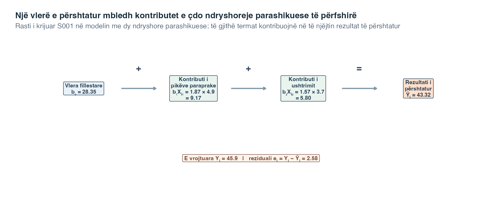
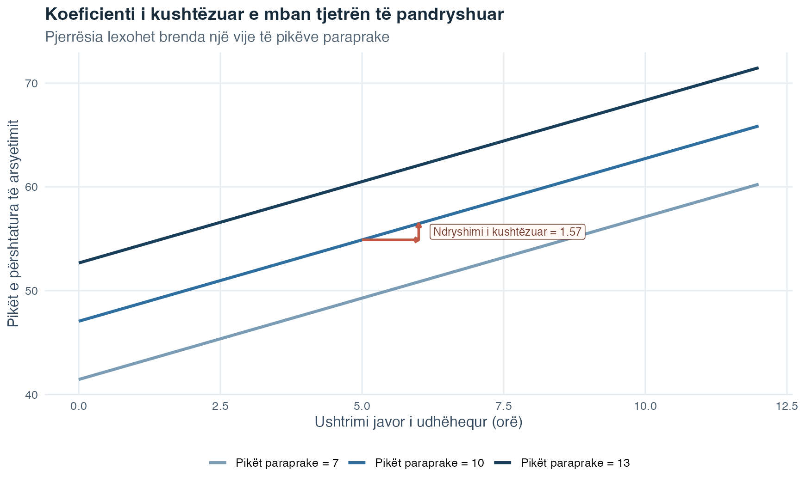
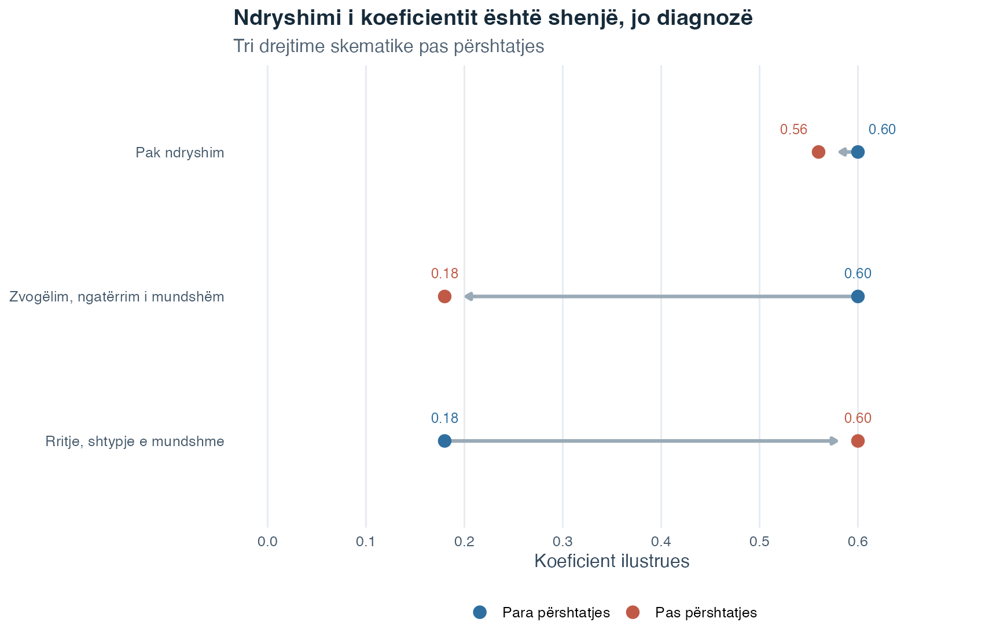
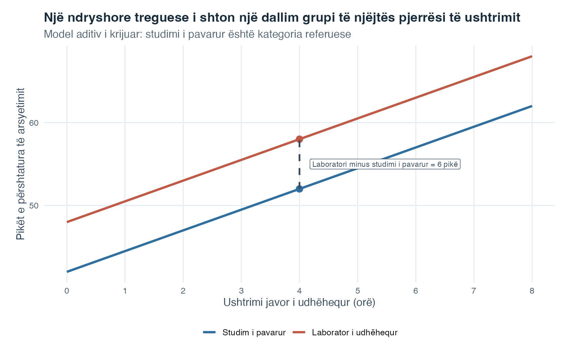
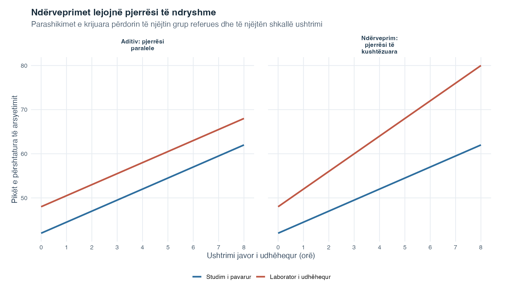

Fleta e ushtrimeve
Zgjidh PDF për shtypje ose Word për redaktim.
Hyrje në Statistikë · Tema 7
Tema 5 përdori një ndryshore parashikuese për të përshtatur një vijë të drejtë. Tema 6 tregoi pse një lidhje mund të ndryshojë pasi merret parasysh një ndryshore e tretë. Regresioni i shumëfishtë i bashkon këto ide: ai modelon një rezultat sasior nga dy ose më shumë ndryshore parashikuese njëkohësisht.
Kjo ka rëndësi sepse pyetjet kërkimore rrallë përfshijnë vetëm një ndryshore të rëndësishme. Për shembull, një rezultat arsyetimi mund të lidhet me përgatitjen paraprake, kohën e ushtrimit dhe formatin e të nxënit. Regresioni i shumëfishtë na lejon të vlerësojmë lidhjen për një ndryshore parashikuese duke krahasuar raste që kanë të njëjtat vlera të modeluara në ndryshoret e tjera.
Fjala i shumëfishtë nuk do të thotë se analizohen disa rezultate njëherësh. Rezultati mbetet një. Ajo që bëhet e shumëfishtë është bashkësia e ndryshoreve parashikuese me të cilat përshkruhet mesatarja e tij e përshtatur. Prandaj, metoda është një zgjerim i drejtpërdrejtë i vijës së vetme të drejtë nga Tema 5, jo një mënyrë krejtësisht e re arsyetimi.
| Ideja e mëparshme | Pyetja së cilës iu përgjigj | Çfarë shton Tema 7 |
|---|---|---|
| Korrelacioni i Pearson-it | Sa afër lëvizin bashkë në mënyrë lineare dy ndryshore sasiore? | Ruan idenë e lidhjes lineare, por u jep ndryshoreve role të dallueshme si rezultat dhe si ndryshore parashikuese |
| Regresioni i thjeshtë linear | Si ndryshon një rezultat i përshtatur me një ndryshore parashikuese? | Vendos disa terma parashikues në të njëjtin ekuacion të përshtatur |
| Korrelacioni i pjesshëm | Si lidhen dy ndryshore pasi të dyja përshtaten për një ndryshore të tretë? | Vlerëson bashkë disa koeficiente të kushtëzuara parashikuese, duke ruajtur një rezultat të emërtuar |
Lexoje tabelën si një vazhdimësi. Korrelacioni vendos gjuhën e lëvizjes lineare në çift. Regresioni i thjeshtë shton një drejtim dhe një vijë të përshtatur. Korrelacioni i pjesshëm sjell përshtatjen statistikore. Regresioni i shumëfishtë ruan këndvështrimin e rezultatit të përshtatur dhe kryen disa përshtatje të tilla brenda një modeli të vetëm.
Ky krahasim quhet përshtatje statistikore ose kontroll statistikor. Është i dobishëm, por nuk është i njëjtë me kontrollin eksperimental. Shtimi i ndryshoreve në një model vëzhgues nuk krijon caktim të rastësishëm dhe, më vete, nuk vërteton shkakësi.
Pyetja udhëzuese: Çfarë do të thotë secili koeficient kur disa ndryshore parashikuese mbivendosen dhe paraqiten së bashku në të njëjtin model?
Një koeficient i regresionit të shumëfishtë i përgjigjet një pyetjeje të kushtëzuar: si ndryshon rezultati mesatar i përshtatur me një ndryshore parashikuese kur të gjithë termat e tjerë në të njëjtin model mbahen të pandryshuar?
Në fund të kësaj teme, duhet të jesh në gjendje:
Fillo me dy ndryshore parashikuese. Një ekuacion i përshtatur nga kampioni është
\[ \widehat{Y}_i=b_0+b_1X_{i1}+b_2X_{i2}. \]
Ky ekuacion ndërton një rezultat të përshtatur nga tri pjesë: një vlerë fillestare dhe nga një kontribut prej secilës ndryshore parashikuese.
| Simboli | Kuptimi me fjalë të thjeshta |
|---|---|
| \(i\) | Rreshti ose rasti që po përshkruhet |
| \(Y_i\) | Rezultati sasior i vëzhguar për atë rast |
| \(X_{i1}\) dhe \(X_{i2}\) | Vlerat e atij rasti në ndryshoret parashikuese 1 dhe 2 |
| \(b_0\) | Prerja e përshtatur, e cila jep vlerën fillestare |
| \(b_1X_{i1}\) | Kontributi i përshtatur i ndryshores parashikuese 1 për këtë rast |
| \(b_2X_{i2}\) | Kontributi i përshtatur i ndryshores parashikuese 2 për këtë rast |
| \(\widehat{Y}_i\) | Vlera e rezultatit që prodhon ekuacioni i përshtatur |
Për të llogaritur një vlerë të përshtatur, shumëzoje vlerën e secilës ndryshore parashikuese me koeficientin e saj dhe shtoji rezultatet te prerja. Dy prodhimet nuk përshkruajnë rezultate të ndara. Ato janë kontribute në të njëjtën mesatare të përshtatur.
Diagrami vijues i vendos vlerat e një rasti të krijuar në modelin me dy ndryshore parashikuese që përdoret gjatë kësaj pjese të Teorisë. Qëllimi i tij është ta bëjë mbledhjen të dukshme para se t’u kthehemi simboleve të përgjithshme.

Lexoje rreshtin e sipërm nga e majta në të djathtë. Kutia e parë jep vlerën fillestare të përshtatur. Dy kutitë pasuese shumëzojnë secilën vlerë parashikuese të këtij rasti me koeficientin përkatës. Mbledhja e të tria pjesëve prodhon një rezultat të vetëm të përshtatur të arsyetimit dhe jo tri parashikime të ndara. Kutia e poshtme pastaj e krahason atë vlerë të plotë të përshtatur me rezultatin e vrojtuar dhe llogarit \(e_i=Y_i-\widehat Y_i\).
Kutitë tregojnë gjithashtu pse një koeficient nuk interpretohet i shkëputur nga ekuacioni. I njëjti koeficient mund të japë një kontribut numerik tjetër për një rast me një vlerë parashikuese tjetër, ndërsa vetë koeficienti mbetet norma e përbashkët për një njësi. Aritmetika e paraqitur i përket një rreshti artificial dhe modelit të deklaruar me dy ndryshore parashikuese. Ajo nuk garanton atë rezultat për një rast tjetër dhe nuk e shndërron asnjërën lidhje të kushtëzuar në efekt shkakësor.
Marrëdhënia në popullatë përfshin një term gabimi:
\[ Y_i=\beta_0+\beta_1X_{i1}+\beta_2X_{i2}+\varepsilon_i. \]
Koeficientët greke \(\beta_0,\beta_1,\) dhe \(\beta_2\) janë parametra të panjohur të popullatës. Gabimi \(\varepsilon_i\) është diferenca mes rezultatit të rastit \(i\) dhe mesatares së popullatës që përcaktohet nga vlerat e ndryshoreve parashikuese të atij rasti. Koeficientët e kampionit \(b_0,b_1,\) dhe \(b_2\) vlerësojnë parametrat përkatës të popullatës.
Pasi modeli me dy ndryshore parashikuese të jetë bërë i qartë, shënimi i shkurtër për çfarëdo numri parametrash parashikues lexohet më lehtë. Le të jetë \(X_{ij}\) vlera e rastit \(i\) në termin parashikues \(j\). Një model i popullatës me \(p\) parametra parashikues është
\[ Y_i = \beta_0 + \sum_{j=1}^{p}\beta_jX_{ij} + \varepsilon_i. \]
Ku:
Shenja e shumës \(\sum\) do të thotë “mblidhi kontributet parashikuese nga \(j=1\) deri te \(j=p\).” Ajo e shpreh të njëjtën logjikë në një ekuacion më të shkurtër. Një kampion i vlerëson koeficientët e popullatës me \(b_0,b_1,\ldots,b_p\). Vlera e përshtatur për rastin \(i\) është
\[ \widehat{Y}_i = b_0 + \sum_{j=1}^{p}b_jX_{ij}. \]
Prerja \(b_0\) është rezultati mesatar i përshtatur kur çdo ndryshore parashikuese sasiore është zero dhe çdo ndryshore parashikuese kategorike ndodhet në kategorinë e saj referuese. Ky kombinim mund të jetë i qartë matematikisht, por jo i dobishëm për përmbajtjen nëse zeroja gjendet jashtë intervalit të vëzhguar.
I njëjti simbol \(p\) numëron parametrat parashikues, jo domosdoshmërisht ndryshoret e emërtuara. Kur modeli përfshin një prerje, një ndryshore kategorike me tri kategori kërkon dy parametra parashikues.
Me një ndryshore parashikuese, Tema 5 kishte nevojë për një prerje dhe një kontribut të pjerrësisë. Regresioni i shumëfishtë e ruan pikërisht atë aritmetikë dhe shton nga një kontribut për secilën ndryshore parashikuese shtesë. Kjo shihet më lehtë duke krahasuar disa profile konkrete sesa duke filluar me një sipërfaqe abstrakte tredimensionale.
Figura vijuese përdor modelin me dy ndryshore parashikuese sasiore nga shembulli i krijuar. Secili shirit horizontal është një vlerë e përshtatur. Tri pjesët e tij me ngjyra janë prerja, kontributi i pikëve paraprake dhe kontributi i orëve të ushtrimit. Katër profilet ndryshojnë qëllimisht fillimisht vetëm njërën ndryshore parashikuese dhe më pas të dyja.
Pyetje udhëzuese: Nëse dy profile kanë të njëjtat pikë paraprake, por orë të ndryshme ushtrimi, cila pjesë e vlerës së tyre të përshtatur duhet të ndryshojë dhe cilat pjesë duhet të mbeten plotësisht të njëjta?

Lexoje fillimisht Profilin A. Rezultati i tij i përshtatur, afërsisht 46.5, është shuma e po atyre tri termave që u paraqitën në Figurën 1. Profili B i mban pikët paraprake në 8, por e rrit ushtrimin nga 2 në 6 orë. Prerja dhe pjesa blu e pikëve paraprake mbeten të pandryshuara. Rritet vetëm pjesa portokalli e ushtrimit. Diferenca e përshtatur mes A-së dhe B-së është katër orë ushtrimi e shumëzuar me koeficientin e përshtatur të ushtrimit.
Profili C e përmbys krahasimin. Ushtrimi mbetet në dy orë, ndërsa pikët paraprake rriten nga 8 në 12. Rritet vetëm kontributi blu i pikëve paraprake. Profili D i bashkon vlerat më të larta të të dyja ndryshoreve parashikuese, prandaj të dyja pjesët parashikuese janë më të mëdha se te A. Kontributi numerik është shkruar brenda secilës pjesë me ngjyrë, ndërsa vlera e përshtatur në tërësi shfaqet në fund të shiritit. Lexoji këto etiketa nga e majta në të djathtë për të rindërtuar secilën vlerë të përshtatur.
Asgjë në këtë figurë nuk zhvillohet me kalimin e kohës. Shiritat krahasojnë profile brenda një ekuacioni të vetëm të përshtatur. Ata as nuk thonë se ndryshimi i ushtrimit ose i pikëve paraprake do ta shkaktonte diferencën e paraqitur. Detyra e tyre është më e ngushtë dhe e rëndësishme: tregojnë se regresioni i shumëfishtë ende e llogarit një vlerë të përshtatur duke mbledhur terma të emërtuar qartë.
Në ekuacionin e përshtatur me dy ndryshore parashikuese
\[ \widehat{Y}=b_0+b_1X_1+b_2X_2, \]
\(b_1\) është diferenca e përshtatur në rezultatin mesatar për një diferencë prej një njësie në \(X_1\), kur krahasohen raste me të njëjtën vlerë të \(X_2\). Në të njëjtën mënyrë, \(b_2\) krahason raste që kanë të njëjtën vlerë të \(X_1\).
Për këtë arsye, pjerrësia e regresionit të shumëfishtë quhet edhe koeficient i pjesshëm i regresionit. Ajo përfaqëson pjesën e lidhjes lineare të një ndryshoreje parashikuese që mbetet pasi modeli merr parasysh termat e tjerë. Nuk është një pjerrësi me dy ndryshore e llogaritur duke i shpërfillur ato.
Shprehja “duke e mbajtur të pandryshuar” përshkruan një krahasim brenda modelit të përshtatur. Ajo nuk premton se studiuesit e kanë mbajtur fizikisht konstante ndryshoren, se çdo kombinim i ndryshoreve parashikuese gjendet në të dhëna ose se koeficienti është një efekt shkakësor.
Figura e mban rezultatin paraprak të arsyetimit në tri vlera të pandryshuara. Brenda secilës vijë, një diferencë prej një ore ushtrim ka të njëjtën diferencë të kushtëzuar të përshtatur. Kalimi nga një vijë në tjetrën ndryshon edhe rezultatin paraprak, prandaj nuk e izolon më koeficientin e ushtrimit.

Tri vijat janë paralele sepse ky model nuk ka ndërveprim. Rezultati paraprak e ndryshon pozicionin vertikal të vijës së përshtatur, por nuk e ndryshon pjerrësinë e ushtrimit. Përqendrohu te vija e mesit. Hapi portokalli horizontal kalon nga pesë në gjashtë orë ushtrim, duke qëndruar në vijën me rezultat paraprak 10. Hapi portokalli vertikal tregon më pas diferencën e përshtatur të rezultatit pikërisht për atë ndryshim prej një ore. Kjo ngritje është \(b_1\) për ushtrimin. Krahasimi i një pike në vijën më të ulët me një pikë në vijën më të lartë do ta ndryshonte edhe rezultatin paraprak, prandaj do të përziente kontributet e dy koeficienteve dhe nuk do të ishte më krahasimi “duke e mbajtur të pandryshuar”.
Programi statistikor i vlerëson koeficientët, prandaj nuk ke nevojë ta mësosh përmendsh formulën e radhës. Qëllimi i saj është të tregojë pse pjerrësia e regresionit të shumëfishtë ndryshon nga pjerrësia e regresionit të thjeshtë.
Për dy ndryshore parashikuese sasiore, le të jetë:
Dy pjerrësitë e përshtatura mund të shkruhen si
\[ b_1 = \frac{r_{Y1}-r_{Y2}r_{12}}{1-r_{12}^2} \frac{s_Y}{s_{X_1}}, \]
\[ b_2 = \frac{r_{Y2}-r_{Y1}r_{12}}{1-r_{12}^2} \frac{s_Y}{s_{X_2}}. \]
Lexoje ekuacionin e parë në tri hapa. Fillo me korrelacionin e ndryshores parashikuese 1 me rezultatin, \(r_{Y1}\). Zbrit pjesën që lidhet me ndryshoren parashikuese 2 përmes prodhimit \(r_{Y2}r_{12}\). Pastaj merr parasysh mbivendosjen e ndryshoreve parashikuese në emërues dhe rikthe njësitë fillestare të matjes me \(s_Y/s_{X_1}\). Ekuacioni i dytë përsërit të njëjtën logjikë duke ndërruar rolet e ndryshoreve parashikuese.
| Pjesa e formulës | Çfarë kontribuon |
|---|---|
| \(r_{Y1}\) | Lidhja lineare e papërshtatur e ndryshores parashikuese 1 me rezultatin |
| \(r_{Y2}r_{12}\) | Modeli i korrelacionit që ndryshorja parashikuese 1 ndan me ndryshoren parashikuese 2 dhe rezultatin |
| \(1-r_{12}^2\) | Pjesa e ndryshueshmërisë së ndryshores parashikuese që nuk përfaqësohet nga korrelacioni i tyre në katror |
| \(s_Y/s_{X_1}\) | Kthimi nga njësitë e standardizuara në njësitë e rezultatit për një njësi të ndryshores parashikuese 1 |
Kjo formulë tregon edhe pse mbivendosja e fortë mes ndryshoreve parashikuese kërkon vëmendje. Nëse \(r_{12}\) është afër \(+1\) ose \(-1\), atëherë \(1-r_{12}^2\) është afër zeros. Të dhënat përmbajnë pak informacion për t’i ndarë dy pjerrësitë e kushtëzuara, prandaj vlerësimet e koeficienteve mund të bëhen të ndjeshme ndaj ndryshimeve të vogla. Nëse njëra ndryshore parashikuese është kopje e saktë lineare e tjetrës, emëruesi është zero dhe dy pjerrësitë e veçanta nuk mund të vlerësohen nga ai model.
Vendosi vlerat e ndryshoreve parashikuese të një rasti në ekuacionin e përshtatur për të marrë \(\widehat{Y}_i\). Kjo vlerë vlerëson rezultatin mesatar të kushtëzuar për raste me atë profil parashikues. Mund të shërbejë edhe si parashikim pikësor, por nuk është rezultat individual i garantuar.
Reziduali i rastit është
\[ e_i=Y_i-\widehat{Y}_i. \]
Një rezidual pozitiv e vendos rezultatin e vëzhguar mbi vlerën e përshtatur. Një rezidual negativ e vendos poshtë saj. Duke e riorganizuar ekuacionin, marrim
\[ Y_i=\widehat{Y}_i+e_i. \]
Gabimi i popullatës \(\varepsilon_i\) përkufizohet në raport me marrëdhënien e panjohur në popullatë. Reziduali i kampionit \(e_i\) llogaritet në raport me modelin e përshtatur të kampionit. Një rezidual mund të pasqyrojë ndryshueshmëri të zakonshme, gabim matjeje, ndryshore parashikuese të lëna jashtë ose një formë modeli që nuk e kap marrëdhënien. Vetëm shenja e tij nuk e tregon shkakun.
Edhe parashikimi kërkon kufij të qartë. Një vlerë e përshtatur shumë përtej intervaleve të vëzhguara të ndryshoreve parashikuese është ekstrapolim. Edhe një kombinim i vlerave parashikuese që veçmas duken të njohura mund të ketë pak mbështetje kur ai kombinim është i rrallë ose mungon në të dhëna.
Një koeficient i pastandardizuar \(b_j\) përdor njësitë fillestare. Nëse ushtrimi matet në orë dhe rezultati në pikë, njësia e koeficientit është pikë për orë. Këta koeficientë janë zgjedhja e duhur për të shkruar ekuacionin e përshtatur dhe për të llogaritur vlerat e përshtatura.
Një koeficient i standardizuar i rishkallëzon si ndryshoren parashikuese, ashtu edhe rezultatin në njësi të devijimit standard. Për një ndryshore parashikuese sasiore,
\[ \widehat{\widetilde{\beta}}_j = b_j\frac{s_{X_j}}{s_Y}, \]
ku \(s_{X_j}\) është devijimi standard i kampionit për ndryshoren parashikuese dhe \(s_Y\) është devijimi standard i kampionit për rezultatin. Koeficienti vlerëson diferencën e përshtatur të rezultatit, në devijime standarde të rezultatit, për një diferencë prej një devijimi standard në ndryshoren parashikuese, ndërsa termat e tjerë të modelit mbahen të pandryshuar.
Koeficientët e standardizuar mund të ndihmojnë në krahasimin e ndryshoreve parashikuese të matura në shkallë të ndryshme, por nuk janë pikë universale të rëndësisë. Ata varen nga ndryshoret e tjera parashikuese, mbivendosja e tyre, shpërndarja e vëzhguar e secilës ndryshore dhe cilësia e matjes. Nuk e identifikojnë automatikisht një shkak ose ndërhyrjen më të dobishme.
Në regresionin e thjeshtë, pjerrësia e standardizuar është e barabartë me \(r\) të Pearson-it. Në regresionin e shumëfishtë, zakonisht nuk është e barabartë me korrelacionin përkatës me dy ndryshore, sepse koeficienti është i kushtëzuar, ndërsa korrelacioni jo.
| Madhësia | Njësitë | A janë përshtatur ndryshoret e tjera parashikuese? | Lexohet më së miri si |
|---|---|---|---|
| Korrelacioni me dy ndryshore \(r_{Yj}\) | Pa njësi | Jo | Lidhje lineare mes dy ndryshoreve |
| Koeficienti i pastandardizuar \(b_j\) | Njësi rezultati për njësi të ndryshores parashikuese | Po | Ndryshim i kushtëzuar në shkallën fillestare të matjes |
| Koeficienti i standardizuar \(\widehat{\widetilde{\beta}}_j\) | Njësi të devijimit standard | Po | Ndryshim i kushtëzuar pasi rishkallëzohen ndryshorja parashikuese dhe rezultati |
Ndryshe nga korrelacioni, një koeficient i standardizuar i regresionit të shumëfishtë nuk kufizohet matematikisht në intervalin nga \(-1\) deri në \(+1\). Në modele të pazakonta me ndryshore parashikuese që mbivendosen fort, vlera e tij absolute mund ta kalojë 1. Kjo nuk e bën një lloj më të fortë korrelacioni. Është një kujtesë tjetër se koeficienti i kushtëzuar dhe korrelacioni me dy ndryshore janë madhësi të ndryshme.
Tri madhësi përshkruajnë pjesë të ndryshme të përshtatjes së modelit.
Gabimi standard i rezidualeve vlerëson shpërndarjen tipike të rezidualeve në njësitë fillestare të rezultatit:
\[ s_e = \sqrt{ \frac{\sum_{i=1}^{n}e_i^2}{n-p-1} }. \]
Këtu, \(n\) është numri i rasteve të analizuara, \(p\) është numri i parametrave parashikues pa përfshirë prerjen dhe \(n-p-1\) janë shkallët e lirisë të rezidualeve. Kjo nuk është e njëjta gjë me gabimin standard të një koeficienti.
Kur ka një prerje, metoda e zakonshme e katrorëve më të vegjël e ndan ndryshueshmërinë e rezultatit në kampion si
\[ SS_{\text{total}}=SS_{\text{model}}+SS_{\text{error}}. \]
Koeficienti i përcaktimit është
\[ R^2 = \frac{SS_{\text{model}}}{SS_{\text{total}}} = 1-\frac{SS_{\text{error}}}{SS_{\text{total}}}. \]
\(R^2\) është pjesa e ndryshueshmërisë së rezultatit në kampion rreth mesatares që përfaqësohet nga modeli i përshtatur. Nuk është përqindja e personave të parashikuar saktë dhe as përqindja e rezultatit të shkaktuar nga ndryshoret parashikuese.
Shtimi i një ndryshoreje parashikuese në një model OLS nuk mund ta zvogëlojë \(R^2\) e zakonshëm të kampionit kur rezultati, rastet dhe prerja mbeten të njëjta. Edhe një term i padobishëm mund ta rrisë pak \(R^2\). \(R^2\) i përshtatur shton një dënim brenda kampionit për vlerësimin e më shumë parametrave parashikues:
\[ R^2_{\text{adjusted}} = 1-(1-R^2)\frac{n-1}{n-p-1}. \]
\(R^2\) i përshtatur mund të zvogëlohet kur përmirësimi i përshtatjes është tepër i vogël në raport me ndërlikimin e shtuar. Megjithatë, nuk është test në të dhëna të reja dhe nuk garanton përgjithësim.
Testi global i modelit pyet nëse të gjithë koeficientët e popullatës, përveç prerjes, janë zero:
\[ H_0:\beta_1=\beta_2=\cdots=\beta_p=0. \]
Statistika e tij mund të shkruhet si
\[ F = \frac{R^2/p}{(1-R^2)/(n-p-1)}. \]
Sipas kushteve të modelit dhe hipotezës zero globale, kjo krahasohet me një shpërndarje \(F\) që ka \(p\) dhe \(n-p-1\) shkallë lirie. Një vlerë p globale e vogël tregon se të dhënat nuk përputhen me idenë që çdo pjerrësi është zero. Ajo nuk identifikon se cili koeficient ndryshon nga zeroja.
Testi i një koeficienti individual bën një pyetje më të ngushtë dhe të kushtëzuar:
\[ H_0:\beta_j=0, \qquad t=\frac{b_j}{SE(b_j)}. \]
Statistika përdor \(n-p-1\) shkallë lirie të rezidualeve. \(SE(b_j)\) mat pasigurinë e kampionimit në atë koeficient sipas modelit të përshtatur. Çdo test koeficienti kushtëzohet nga termat e tjerë të saktë që përfshihen. Ndryshimi i modelit mund ta ndryshojë vlerësimin, gabimin e tij standard dhe vlerën e tij p.
Një koeficient që zbulohet statistikisht nuk është automatikisht i madh, shkakësor, i rëndësishëm në praktikë ose i dobishëm për parashikim të ardhshëm. Këto janë pyetje të ndara.
Dy modele janë të ndërfutura kur modeli më i vogël, ose i kufizuar, mund të merret duke vendosur një ose më shumë koeficiente të modelit më të madh, ose të pakufizuar, në zero. Për shembull, modeli pa dy terma ndërveprimi është i ndërfutur brenda të njëjtit model me ato ndërveprime.
Le të shënojë \(R\) modelin e kufizuar dhe \(U\) modelin e pakufizuar. Nëse modeli më i madh shton \(p_U-p_R\) parametra parashikues, statistika për modelet e ndërfutura është
\[ F = \frac{(R_U^2-R_R^2)/(p_U-p_R)}{(1-R_U^2)/(n-p_U-1)}. \]
Numëruesi mat ndryshueshmërinë e shpjeguar shtesë për çdo parametër të shtuar. Emëruesi mat ndryshueshmërinë reziduale për çdo shkallë lirie të rezidualeve në modelin e pakufizuar.
Ky test pyet nëse koeficientët e shtuar janë bashkërisht zero. Të dy modelet duhet të përdorin të njëjtin rezultat dhe të njëjtat raste të analizuara. Modelet që duken të ngjashme nuk janë domosdoshmërisht të ndërfutura dhe modelet e përshtatura me kampione të ndryshme nuk mund të krahasohen me këtë formulë.
Mendo një model që tashmë përmban rezultatin paraprak dhe po shqyrtojmë shtimin e orëve të ushtrimit. Një korrelacion gjysmëpartial, i quajtur edhe korrelacion i pjesës, izolon kontributin linear të ndryshores parashikuese kandidate në dy hapa:
Vetëm ndryshorja parashikuese kandidate shndërrohet në reziduale. Ky është dallimi nga korrelacioni i pjesshëm në Temën 6, ku të dyja ndryshoret qendrore shndërrohen në reziduale ndaj ndryshores së kontrollit.
Për një ndryshore parashikuese të shtuar dhe të njëjtat raste të analizuara,
\[ sr_j^2=R^2_{\text{larger}}-R^2_{\text{smaller}}=\Delta R^2. \]
Pra, korrelacioni gjysmëpartial në katror është rritja unike e \(R^2\) të modelit në kampion kur ajo ndryshore parashikuese shtohet e fundit. “Unike” do të thotë se nuk përfaqësohet në mënyrë lineare nga ndryshoret parashikuese të përfshira më parë. Nuk do të thotë se është e pastër nga ana shkakësore ose e lirë nga çdo ndikim tjetër.
Ndryshoret parashikuese shpesh mbivendosen. Për shembull, koha e ushtrimit dhe përgatitja paraprake mund të jenë të korreluara. Atëherë lidhjet e tyre me dy ndryshore me rezultatin përmbajnë informacion të përbashkët dhe modeli duhet të përcaktojë si paraqitet marrëdhënia e përshtatur nëpër koeficientët e kushtëzuara.
Nëse një koeficient bëhet më i vogël pas përshtatjes, lidhja me dy ndryshore mund të ketë përfshirë ndryshueshmëri të përbashkët me një ndryshore tjetër parashikuese. Ky model mund të përputhet me ngatërrimin, ku një ndryshore e tretë kontribuon në lidhjen mes ndryshores parashikuese dhe rezultatit. Vetëm ndryshimi numerik nuk e vërteton ngatërrimin dhe as nuk identifikon një strukturë shkakësore.
Nëse një koeficient bëhet më i madh pas përshtatjes, një ndryshore tjetër parashikuese mund të ketë fshehur ndryshueshmëri të rëndësishme. Ky model shpesh quhet shtypje. Në krahasimin e modeleve të përshtatura, përshtatja mund ta përfaqësojë veçmas një përbërës të ndryshores parashikuese që lidhet me ndryshoren shtypëse, kur ai përbërës nuk lidhet me rezultatin ose lidhet në drejtim të kundërt. Marrëdhënia e kushtëzuar që mbetet mund të duket më e qartë ose më e madhe.
Figura skematike tregon tri drejtime të mundshme. Këto janë vlera mësimore, jo rezultate nga kohorta e simuluar dhe as pragje diagnostikuese.

Brenda çdo rreshti, pika blu është koeficienti para përshtatjes dhe pika portokalli është koeficienti pas përshtatjes. Shigjeta tregon ndryshimin numerik, jo një ndryshim përgjatë kohës. Në rreshtin e parë, dy pikat mbeten afër. Në të dytin, përshtatja e lëviz koeficientin drejt zeros. Në të tretin, përshtatja e largon nga zeroja. Etiketat “ngatërrim i mundshëm” dhe “shtypje e mundshme” emërtojnë interpretime që ia vlen të hetohen, jo përfundime që prodhohen automatikisht nga shigjeta.
Mbivendosja e fortë e ndryshoreve parashikuese mund ta bëjë ndarjen e ndryshueshmërisë së përbashkët të ndjeshme ndaj ndryshimeve të vogla në të dhëna ose model. Interpretoji koeficientët së bashku, shqyrtoji marrëdhëniet mes ndryshoreve parashikuese dhe përdor njohuritë e fushës. Këtu nuk ka një prag të vetëm numerik që mund të vendosë vetë kur mbivendosja është tepër e fortë, prandaj nuk përdoret asnjë rregull automatik.
Dy modelet e ndërtuara të korrelacioneve më poshtë e bëjnë të llogaritshëm dallimin. Le të jetë \(X\) ndryshorja parashikuese qendrore, \(Z\) ndryshorja tjetër parashikuese dhe \(Y\) rezultati. Të gjitha hyrjet janë vlera mësimore, jo rezultate nga kohorta e simuluar dhe as pragje për të diagnostikuar një grup të vërtetë të dhënash.
| Modeli | \(r_{XY}\) | \(r_{XZ}\) | \(r_{ZY}\) | Koeficienti i standardizuar për X pasi hyn Z | Çfarë sugjeron modeli |
|---|---|---|---|---|---|
| Ngatërrim i mundshëm | 0.60 | 0.70 | 0.73 | 0.17 | Ndryshorja parashikuese që na intereson dhe ndryshorja tjetër mbartin një pjesë të madhe të të njëjtit informacion për rezultatin. |
| Shtypje e mundshme | 0.18 | 0.60 | -0.34 | 0.60 | Ndryshorja tjetër heq ndryshueshmërinë e përbashkët që drejtohet larg lidhjes midis ndryshores që na intereson dhe rezultatit. |
Në rreshtin e ngatërrimit të mundshëm, lidhja bivariate fillon me \(r_{XY}=0.60\). Si \(r_{XZ}=0.70\), ashtu edhe \(r_{ZY}=0.73\) janë të forta dhe pozitive, prandaj \(X\) dhe \(Z\) bartin një pjesë të madhe të të njëjtit model të lidhur me rezultatin. Zëvendësimi në formulën e koeficientit të standardizuar me dy ndryshore parashikuese jep
\[ \widehat{\widetilde\beta}_X = \frac{0.60-(0.73)(0.70)}{1-0.70^2} =0.18\ \text{përafërsisht}. \]
Koeficienti bëhet më i vogël sepse modeli nuk ia cakton më vetëm \(X\) tërë modelin që ajo ndan me \(Z\). Kjo aritmetikë përputhet me ngatërrimin e mundshëm, por vetëm korrelacionet nuk mund të tregojnë cila ndryshore vjen e para në një proces shkakësor.
Në rreshtin e shtypjes së mundshme, \(X\) ka vetëm një lidhje bivariate të moderuar me \(Y\), pra \(r_{XY}=0.18\). Ndryshorja parashikuese \(Z\) mbivendoset pozitivisht me \(X\), \(r_{XZ}=0.60\), por lidhet në drejtim të kundërt me \(Y\), \(r_{ZY}=-0.34\). Pasi modeli e ndan atë mbivendosje me drejtim të kundërt, koeficienti për \(X\) bëhet
\[ \widehat{\widetilde\beta}_X = \frac{0.18-(-0.34)(0.60)}{1-0.60^2} =0.60. \]
Si mund të ndodhë kjo? Përfytyro një pikëzim të ndërtuar kontrolli \(X\) që përzien aftësinë që na intereson me një prirje shtesë përgjigjeje. Ndryshorja \(Z\) kap një pjesë të madhe të asaj prirjeje dhe ajo prirje drejtohet në kah të kundërt nga rezultati i mëvonshëm \(Y\). Përfshirja e \(Z\) i lejon modelit të përshtatur ta përfaqësojë veçmas atë mbivendosje me drejtim të kundërt. Koeficienti i \(X\) pastaj përshkruan lidhjen e tij të kushtëzuar kur \(Z\) mbahet në një vlerë fikse dhe mund të jetë më i madh se lidhja bivariate. Ky model përputhet me shtypjen, por nuk zbulon përbërës të pastër brenda asnjërës ndryshore të matur. Koeficienti më i madh ende nuk vërteton se \(X\) e shkakton \(Y\), dhe një ndryshore shtypëse nuk duhet shtuar vetëm sepse e bën më të madh një koeficient të parapëlqyer.
Deri tani, çdo ndryshore parashikuese në ekuacionin e përshtatur ka qenë një numër: pikë paraprake, orë ushtrimi ose një madhësi tjetër e matur. Por shumë pyetje të dobishme përfshijnë edhe kategori. Çfarë ndodh nëse duam të krahasojmë formate mësimi, kushte terapie ose programe studimi dhe njëkohësisht të përshtatemi për një ndryshore parashikuese sasiore?
Një etiketë kategorie nuk mund të shumëzohet drejtpërdrejt me një pjerrësi. Gjithashtu, nuk duhet t’i zëvendësojmë etiketat pa rend me 1, 2 dhe 3 dhe të shtiremi sikur hapi nga kategoria 1 te 2 ka të njëjtin kuptim si hapi nga 2 te 3. Kodimi me ndryshore treguese e përkthen përkatësinë në kategori në një ose disa kolona që përmbajnë vetëm 0 dhe 1. Kështu, modeli mund të bëjë krahasime të emërtuara pa shpikur rend ose largësi.
Pyetje udhëzuese: Si mund t’i krahasojë një ekuacion dy grupe në të njëjtën vlerë ushtrimi dhe njëkohësisht ta mbajë çdo vlerë të përshtatur numerikisht të kontrollueshme?
Fillo me një ndryshore parashikuese sasiore dhe dy kategori. Le të jetë \(X\) numri i orëve javore të ushtrimit. Studimi i pavarur është kategoria referuese, pra grupi nga i cili përshkruhet grupi tjetër. Përkufizo
\[ D_{\text{laborator}}= \begin{cases} 1 & \text{laborator i udhëhequr},\\ 0 & \text{studim i pavarur}. \end{cases} \]
Shqyrto këtë model aditiv të krijuar:
\[ \widehat{Y}=42+2.5X+6D_{\text{laborator}}. \]
Fjala aditiv do të thotë se kontributi i ushtrimit dhe kontributi i grupit mblidhen si terma të veçantë. Zëvendësoje vlerën e treguesit para se ta interpretosh ekuacionin.
Për studimin e pavarur, \(D_{\text{laborator}}=0\):
\[ \widehat{Y}_{\text{pavarur}}=42+2.5X. \]
Për laboratorin e udhëhequr, \(D_{\text{laborator}}=1\):
\[ \widehat{Y}_{\text{laborator}}=42+2.5X+6=48+2.5X. \]
Te katër orë ushtrimi, e gjithë aritmetika shihet në tabelën vijuese.
| Formati i mësimit | Orët e ushtrimit X | Treguesi i laboratorit D | Vlera fillestare 42 | Kontributi i ushtrimit 2.5X | Kontributi i grupit 6D | Rezultati i përshtatur |
|---|---|---|---|---|---|---|
| Studim i pavarur | 4 | 0 | 42 | 10 | 0 | 52 |
| Laborator i udhëhequr | 4 | 1 | 42 | 10 | 6 | 58 |
Të dy rreshtat kanë të njëjtin kontribut ushtrimi, \(2.5(4)=10\). Rreshti i studimit të pavarur nuk merr kontribut grupi dhe jep \(42+10+0=52\). Rreshti i laboratorit të udhëhequr merr kontributin prej gjashtë pikësh dhe jep \(42+10+6=58\). Po i krahasojmë dy formatet në të njëjtën vlerë ushtrimi, prandaj diferenca e përshtatur laborator-minus-studim-i-pavarur është gjashtë pikë.
Koeficientët tani kanë kuptime të sakta në lidhje me referencën:

Vijat paralele kanë rëndësi. Meqë nuk ka term ndërveprimi, diferenca e përshtatur prej gjashtë pikësh është e njëjtë te zero, katër ose tetë orë ushtrimi. Modeli lejon ndryshim në lartësinë e vijave, por jo në pjerrësinë e tyre.
Rendi në të cilin shkruhen termat aditivë nuk e ndryshon modelin. Shkrimet
\[ 42+2.5X+6D_{\text{laborator}} \qquad\text{dhe}\qquad 42+6D_{\text{laborator}}+2.5X \]
japin saktësisht të njëjtat vlera të përshtatura, sepse mbledhësit mund të rirenditen. Po ashtu, emërtimi i ushtrimit si \(X_1\) dhe i treguesit si \(X_2\), ose ndërrimi i këtyre nënshkrimeve, ndryshon vetëm shënimin nëse secili koeficient mbetet i lidhur me ndryshoren e duhur. Figura dhe parashikimet mbeten të njëjta. Nëse një ndryshore parashikuese është sasiore apo kategorike përcaktohet nga kuptimi dhe kodimi i saj, pavarësisht emrit ose pozicionit të kolonës.
Ndryshimi i kategorisë referuese është ndryshe: ai e ndryshon përshkrimin e koeficienteve, por ende nuk e ndryshon marrëdhënien e përshtatur. Nëse laboratori i udhëhequr bëhet referenca dhe \(D_{\text{pavarur}}=1\) identifikon studimin e pavarur, të njëjtat dy vija mund të shkruhen si
\[ \widehat{Y}=48+2.5X-6D_{\text{pavarur}}. \]
Prerja tani është 48 sepse i përket vijës referuese të laboratorit. Koeficienti tregues tani është \(-6\) sepse e krahason studimin e pavarur me laboratorin. Te katër orë ushtrimi, të dy parametrizimet vazhdojnë të japin 52 për studimin e pavarur dhe 58 për laboratorin.
| Referenca e koeficienteve | Rezultati i përshtatur i studimit të pavarur te X = 4 | Rezultati i përshtatur i laboratorit te X = 4 |
|---|---|---|
| Ref.: Studim i pavarur | 52 | 58 |
| Ref.: Laborator i udhëhequr | 52 | 58 |
Me \(k\) kategori dhe një prerje, e njëjta logjikë kërkon \(k-1\) ndryshore treguese. Për tri formate mësimi me studimin e pavarur si referencë, përkufizo \(D_{\text{punëtori}}\) dhe \(D_{\text{laborator}}\). Grupi referues ka \((0,0)\), punëtoria në grup ka \((1,0)\) dhe laboratori i udhëhequr ka \((0,1)\). Modeli aditiv është
\[ \widehat{Y} = b_0+b_1X+b_2D_{\text{punëtori}}+b_3D_{\text{laborator}}. \]
Këtu, \(b_2\) është punëtori minus studim i pavarur dhe \(b_3\) është laborator minus studim i pavarur, gjithmonë në të njëjtën vlerë të \(X\). Përdorimi i të tre treguesve të grupit bashkë me një prerje do të krijonte varësi lineare të saktë, sepse treguesit japin shumën një në çdo rresht.
Tabela e kodimit i bën të dukshme tri ekuacionet e përshtatura para se të zëvendësohet ndonjë numër:
| Formati i mësimit | \(D_{\text{punëtori}}\) | \(D_{\text{laborator}}\) | Ekuacioni aditiv i përshtatur |
|---|---|---|---|
| Studim i pavarur, referenca | 0 | 0 | \(b_0+b_1X\) |
| Punëtori në grup | 1 | 0 | \((b_0+b_2)+b_1X\) |
| Laborator i udhëhequr | 0 | 1 | \((b_0+b_3)+b_1X\) |
Lexo nga një rresht. Në rreshtin e referencës, të dy çelësat janë të fikur, prandaj të dy kontributet e grupit zhduken. Në rreshtin e punëtorisë shtohet vetëm \(b_2\). Në rreshtin e laboratorit shtohet vetëm \(b_3\). Termi i përbashkët \(b_1X\) shfaqet në çdo rresht, prandaj të tri vijat e përshtatura janë paralele në këtë model aditiv. Dy koeficientët tregues janë krahasime të veçanta me grupin referues, jo hapa të njëpasnjëshëm në një shkallë të renditur.
Modeli aditiv sapo e zgjeroi regresionin e shumëfishtë me një ndryshore parashikuese kategorike, por bëri një supozim të heshtur: të dy grupet kanë të njëjtën pjerrësi ushtrimi. Kjo mund të jetë e arsyeshme ose tepër kufizuese. Ndoshta diferenca e përshtatur mes formateve të mësimit rritet me shtimin e orëve të ushtrimit. Atëherë, një largësi konstante prej gjashtë pikësh nuk mund ta përshkruajë marrëdhënien.
Një ndërveprim lejon që lidhja për një ndryshore parashikuese të varet nga një ndryshore tjetër parashikuese. Në këtë shembull pyet nëse pjerrësia e përshtatur e ushtrimit ndryshon sipas formatit të mësimit. Modeli shkon përtej shtimit të një diference tjetër grupi duke përfshirë një prodhim që rritet vetëm kur si \(X\), ashtu edhe \(D\), janë jo zero.
Pyetje udhëzuese: A mbeten paralele dy vijat e përshtatura, apo largësia mes tyre ndryshon me ndryshimin e ushtrimit?
Për orët e ushtrimit \(X\) dhe një tregues binar grupi \(D\), modeli i përgjithshëm me ndërveprim është
\[ \widehat{Y}=b_0+b_1X+b_2D+b_3XD. \]
Prodhimi \(XD\) është termi i ndërveprimit. Zëvendësoje secilën vlerë të treguesit për t’i shfaqur dy vijat e përshtatura.
Për grupin referues, \(D=0\):
\[ \widehat{Y}=b_0+b_1X. \]
Për grupin e krahasimit, \(D=1\):
\[ \widehat{Y}=(b_0+b_2)+(b_1+b_3)X. \]
Prandaj:
Kthehu te shembulli numerik aditiv dhe shto një koeficient ndërveprimi prej \(1.5\):
\[ \widehat{Y}=42+2.5X+6D_{\text{laborator}}+1.5XD_{\text{laborator}}. \]
Për studimin e pavarur, \(D_{\text{laborator}}=0\), prandaj të dy termat që përmbajnë treguesin zhduken:
\[ \widehat{Y}_{\text{pavarur}}=42+2.5X. \]
Për laboratorin e udhëhequr, \(D_{\text{laborator}}=1\):
\[ \widehat{Y}_{\text{laborator}} =42+2.5X+6+1.5X =48+4X. \]
Pjerrësia e laboratorit është \(2.5+1.5=4\) pikë për orë ushtrimi. Prandaj, koeficienti i ndërveprimit \(1.5\) është një diferencë mes pjerrësive, jo një zhvendosje tjetër e lartësisë së vijës. Te zero orë ushtrimi, diferenca e përshtatur mes grupeve mbetet gjashtë pikë. Te katër orë është \(6+1.5(4)=12\) pikë, ndërsa te tetë orë është \(6+1.5(8)=18\) pikë.
| Modeli | Orët e ushtrimit | Rezultati i përshtatur i studimit të pavarur | Rezultati i përshtatur i laboratorit | Laboratori minus studimi i pavarur |
|---|---|---|---|---|
| Aditiv: pjerrësi paralele | 0 | 42 | 48 | 6 |
| Aditiv: pjerrësi paralele | 4 | 52 | 58 | 6 |
| Aditiv: pjerrësi paralele | 8 | 62 | 68 | 6 |
| Ndërveprim: pjerrësi të kushtëzuara | 0 | 42 | 48 | 6 |
| Ndërveprim: pjerrësi të kushtëzuara | 4 | 52 | 64 | 12 |
| Ndërveprim: pjerrësi të kushtëzuara | 8 | 62 | 80 | 18 |

Lexoji panelet nga e majta në të djathtë. Në panelin aditiv, lëvizja një orë djathtas i rrit të dyja vijat me 2.5 pikë. Prandaj largësia e tyre vertikale mbetet gjashtë pikë. Në panelin me ndërveprim, vija e studimit të pavarur vazhdon të rritet me 2.5 pikë, ndërsa vija e laboratorit rritet me katër. Vijat largohen, dhe pikërisht kështu bëhet i dukshëm ky ndërveprim pozitiv.
Koeficientët e rendit më të ulët mbeten kuptimplotë, por kuptimi i tyre është i kushtëzuar. Në modelin me ndërveprim, \(b_1=2.5\) është pjerrësia e ushtrimit në grupin referues, \(b_2=6\) është diferenca laborator-minus-studim-i-pavarur kur \(X=0\), dhe \(b_3=1.5\) është diferenca mes pjerrësive të ushtrimit. Nëse zeroja është jashtë intervalit të dobishëm të ushtrimit, zbritja e një konstanteje kuptimplote nga \(X\), e quajtur qendërzim, mund ta zhvendosë pikën e krahasimit pa ndryshuar asnjërën vijë të përshtatur.
Me tri grupe, modeli kërkon dy terma tregues dhe dy terma ndërveprimi mes ushtrimit dhe treguesve. Secili ndërveprim krahason një pjerrësi joreferuese me pjerrësinë e grupit referues. Ndryshimi i referencës ndryshon cilat diferenca pjerrësish paraqiten si koeficiente, por vijat e përshtatura të grupeve mbeten të pandryshuara.
Shembulli binar e bëri të dukshme veçmas idenë e ndërveprimit. Një ekuacion realist i regresionit të shumëfishtë mund t’i përmbajë të gjitha pjesët njëkohësisht: një ndryshore tjetër sasiore për përshtatje statistikore, një ndryshore kategorike të përfaqësuar nga disa tregues dhe disa terma ndërveprimi. Shënimi duket i ngarkuar, por mënyra e leximit nuk ndryshon. Zgjidh një grup, vendos zerot dhe njëshat e tij, thjeshto ekuacionin dhe vetëm pastaj interpreto vijën e atij grupi.
Le të jetë \(P\) rezultati paraprak i arsyetimit, \(X\) orët javore të ushtrimit dhe formati i mësimit të ketë të njëjtat tri nivele si më lart. Shqyrto këtë model të përshtatur e të ndërtuar:
\[ \widehat{Y} = 30+0.4P+2X +3D_{\text{punëtori}}+6D_{\text{laborator}} +0.5XD_{\text{punëtori}}+1.5XD_{\text{laborator}}. \]
Pyetje udhëzuese: Cilët terma mbeten për secilin format mësimi dhe çfarë tregojnë ata për pjerrësinë e përshtatur të ushtrimit kur rezultati paraprak mbahet i pandryshuar?
Dy vlerat treguese i japin përgjigje kësaj pyetjeje hap pas hapi:
| Formati i mësimit | Çifti i treguesve \((D_{\text{punëtori}},D_{\text{laborator}})\) | Termat që mbeten pas zëvendësimit | Ekuacioni i përshtatur për grupin |
|---|---|---|---|
| Studim i pavarur, referenca | \((0,0)\) | \(30+0.4P+2X\) | \(\widehat{Y}_{\text{pavarur}}=30+0.4P+2X\) |
| Punëtori në grup | \((1,0)\) | \(30+0.4P+2X+3+0.5X\) | \(\widehat{Y}_{\text{punëtori}}=33+0.4P+2.5X\) |
| Laborator i udhëhequr | \((0,1)\) | \(30+0.4P+2X+6+1.5X\) | \(\widehat{Y}_{\text{laborator}}=36+0.4P+3.5X\) |
Fillo me atë që është e përbashkët në të tri ekuacionet. Koeficienti \(0.4\) thotë se, brenda çdo formati mësimi dhe te e njëjta vlerë ushtrimi, një pikë më shumë në rezultatin paraprak lidhet me një rezultat të përshtatur \(0.4\) pikë më të lartë. Ky model nuk përmban ndërveprim mes rezultatit paraprak dhe formatit, prandaj kjo pjerrësi e kushtëzuar e rezultatit paraprak është e njëjtë në të tri formatet.
Tani krahaso termat e ushtrimit. Studimi i pavarur ka pjerrësi \(2\). Pjerrësia e punëtorisë është \(2+0.5=2.5\), ndërsa pjerrësia e laboratorit është \(2+1.5=3.5\). Pra, \(0.5\) është diferenca punëtori-minus-studim-i-pavarur mes pjerrësive të ushtrimit, ndërsa \(1.5\) është diferenca laborator-minus-studim-i-pavarur mes pjerrësive. Asnjëri numër nuk është më vete pjerrësia e plotë e një grupi.
Edhe diferencat e përshtatura mes grupeve varen nga \(X\):
\[ \widehat{Y}_{\text{punëtori}}-\widehat{Y}_{\text{pavarur}}=3+0.5X, \qquad \widehat{Y}_{\text{laborator}}-\widehat{Y}_{\text{pavarur}}=6+1.5X. \]
Kur \(X=0\), koeficientët tregues 3 dhe 6 janë diferencat e përshtatura mes grupeve te i njëjti rezultat paraprak. Në vlera të tjera të ushtrimit duhet shtuar kontributi i ndërveprimit. Për shembull, mbaje rezultatin paraprak te \(P=50\) dhe ushtrimin te \(X=4\):
\[ \begin{aligned} \widehat{Y}_{\text{pavarur}}&=30+0.4(50)+2(4)=58,\\ \widehat{Y}_{\text{punëtori}}&=33+0.4(50)+2.5(4)=63,\\ \widehat{Y}_{\text{laborator}}&=36+0.4(50)+3.5(4)=70. \end{aligned} \]
Diferenca punëtori-minus-studim-i-pavarur është \(3+0.5(4)=5\) pikë, ndërsa diferenca laborator-minus-studim-i-pavarur është \(6+1.5(4)=12\) pikë. Këto janë krahasime të mesatareve të kushtëzuara të përshtatura për \(P\) dhe \(X\) të barabarta, jo diferenca të garantuara mes studentëve individualë dhe as efekte shkakësore pa një dizajn që e mbështet atë interpretim.
Ekuacioni i përshtatur dhe pyetja e inferencës duhet të përputhen term për term. Materialet mbështesin tri mjetet e testimit të prezantuara më lart: testin \(t\) për një koeficient të vetëm, testin e përbashkët ose të ndërfutur \(F\) dhe testin global \(F\). Modeli kompleks tregon pse ato nuk janë të këmbyeshme.
| Pyetja | Hipoteza zero në modelin më lart | Testi i përshtatshëm i mbështetur |
|---|---|---|
| A ndryshon nga zero pjerrësia e ushtrimit në grupin referues, duke u kushtëzuar në të gjithë termat e tjerë? | \(H_0:\beta_2=0\) | Testi \(t\) për një koeficient të vetëm |
| A ndryshon pjerrësia e ushtrimit në laborator nga pjerrësia e referencës? | \(H_0:\beta_6=0\) | Testi \(t\) për koeficientin e vetëm të ndërveprimit |
| A ndryshojnë diku pjerrësitë e ushtrimit nëpër tri formatet? | \(H_0:\beta_5=\beta_6=0\) | Testi i ndërfutur \(F\) që krahason modelin me ndërveprime me modelin aditiv |
| A kontribuon ndonjë term përveç prerjes në këtë specifikim të plotë? | \(H_0:\beta_1=\cdots=\beta_6=0\) | Testi global \(F\) i modelit |
Edhe një dallim ka rëndësi. Testimi i \(H_0:\beta_3=\beta_4=0\) brenda modelit me ndërveprime pyet nëse diferencat mes grupeve janë zero pikërisht kur \(X=0\) dhe \(P\) mbahet i pandryshuar. Ai nuk teston nëse formati i mësimit është i parëndësishëm në çdo vlerë ushtrimi. Një test hierarkik i përbashkët për të gjithë termat e formatit e krahason modelin e plotë me një model nga i cili hiqen së bashku \(D_{\text{punëtori}}\), \(D_{\text{laborator}}\), \(XD_{\text{punëtori}}\) dhe \(XD_{\text{laborator}}\). Ndryshimi i grupit referues ndryshon përshkrimet e koeficienteve individualë, por nuk i ndryshon vijat e përshtatura të grupeve ose përfundimin e krahasimit të përbashkët për ndërveprimet.
Ndërtimi i modelit duhet të fillojë nga pyetja kërkimore, plani i matjes, dizajni dhe një formë funksionale e arsyeshme. Forma funksionale është forma matematikore me të cilën paraqitet marrëdhënia, si vija të drejta me ose pa ndërveprime. Përzgjedhja automatike nuk mund t’i marrë këto vendime për ty.
Kriteri informues i Akaike-s, ose AIC, balancon përshtatjen e modelit me numrin e parametrave të vlerësuar:
\[ AIC=-2\log(L)+2k, \]
Në këtë formulë, \(L\) është gjasësia e vlerësuar në vlerat e përshtatura të parametrave. Gjasësia mat sa përputhen të dhënat e vëzhguara me vlera të caktuara të parametrave sipas modelit. Këto vlera të përshtatura janë vlerat që e bëjnë gjasësinë sa më të madhe për këto të dhëna, prandaj nganjëherë quhet gjasësia e maksimizuar. Shprehja \(\log(L)\) është logaritmi natyror i asaj gjasësie dhe e vendos në një shkallë mbledhëse më të përshtatshme. Simboli \(k\) numëron parametrat e vlerësuar në gjasësi. Një AIC më i vogël tregon një ekuilibër më të mirë mes përshtatjes dhe ndërlikimit te modelet kandidate të përshtatura me të njëjtin rezultat dhe të njëjtat vëzhgime.
AIC-ja nuk ka një prag universal kalimi. Një model me AIC-në më të ulët brenda një grupi të dobët kandidatësh mund të jetë përsëri i specifikuar keq. AIC-ja nuk teston shkakësinë, nuk i zëvendëson diagnostikimet dhe nuk mat performancën në të dhëna të reja. Nëse qëllimi është parashikimi, vlerësimi me të dhëna që nuk janë përdorur për përzgjedhje mbetet një detyrë më vete.
Procedurat e përzgjedhjes përpara mund të humbin kombinime të dobishme, të përfitojnë nga zhurma e kampionit dhe t’i bëjnë vlerësimet të duken më të sigurta sesa duhet, sepse i njëjti kampion u përdor si për të zgjedhur modelin, ashtu edhe për ta vlerësuar. Nëse i përdor, trajtoji si krahasime të qarta mes kandidatëve të mbrojtshëm, jo si një makinë që zbulon të vërtetën.
Regresioni i shumëfishtë e zgjeron logjikën diagnostikuese të Temës 5. Pyet nëse:
Një grafik i rezidualeve kundrejt vlerave të përshtatura vendos çdo rezultat të përshtatur në boshtin horizontal dhe rezidualin e tij në boshtin vertikal. Na ndihmon të kërkojmë lakime, ndryshim të shpërndarjes vertikale ose raste të veçuara që ekuacioni i përshtatur nuk i ka përfaqësuar mirë.
Një grafik normal kuantil-kuantil, që zakonisht shkurtohet si grafik normal Q-Q, së pari i rendit rezidualet e standardizuara nga më i vogli te më i madhi. Një rezidual i standardizuar e shpreh rezidualin në raport me madhësinë e tij të zakonshme të vlerësuar, duke marrë parasysh pozicionin e rastit në të dhënat e ndryshoreve parashikuese. Grafiku i krahason këto reziduale të renditura me pozicionet që priten nëse gabimet e modelit ndjekin shpërndarjen normale. Pikat afër diagonales përputhen përgjithësisht me atë formë, ndërsa lakimet sistematike ose largimet e forta në skaje kërkojnë hetim. Normaliteti është një kusht për testet dhe intervalet e njohura në kampion të vogël, jo kërkesë që çdo ndryshore e papërpunuar të ketë vetë shpërndarje normale.
Diagnostikimet e rasteve bëjnë një pyetje tjetër. Leverage-i përshkruan sa i pazakontë është kombinimi i ndryshoreve parashikuese të një rasti brenda modelit të përshtatur. Distanca e Cook-ut e bashkon atë pozicion parashikues me madhësinë e rezidualit për të përmbledhur sa mund të ndryshonte regresioni i përshtatur po të lihej jashtë ai rast. Këto paraqitje dhe kontrollet përmbajtësore të të dhënave japin dëshmi për hetimin e supozimeve pa vërtetuar se ato plotësohen. Një vëzhgim shqetësues duhet të kontrollohet dhe të analizohet në kontekst. Vetëm kjo nuk do ta arsyetonte fshirjen automatike.
Regresioni i shumëfishtë i përgjigjet një pyetjeje që shfaqet sa herë një rezultat lidhet me më shumë se një tipar njëkohësisht: Si mund ta ndajnë disa ndryshore parashikuese një shpjegim të vetëm pa humbur nga sytë se çfarë krahason secili koeficient? Ai ruan logjikën e vlerës së përshtatur dhe të mbetjes nga regresioni i thjeshtë, por lejon që çdo rast të marrë disa kontribute brenda të njëjtit ekuacion. Prandaj është i dobishëm për përshkrim dhe parashikim dhe mund t’i paraqesë lidhjet e përshtatura më ndershmërisht se një varg analizash të shkëputura me nga dy ndryshore.
Fjala i kushtëzuar është pika mbështetëse. Një pjerrësi sasiore përshkruan një ndryshim të përshtatur kur termat e tjerë të atij modeli mbahen të pandryshuar. Një koeficient tregues e kthen kategorinë në një krahasim të qartë me një grup referues, në vend që të shtiret sikur emrat e kategorive formojnë shkallë numerike. Më pas, një ndërveprim e heq supozimin se një pjerrësi e përshtatur ose një diferencë grupi duhet të mbetet e njëjtë kudo. Ai shtron një pyetje më të thellë: A ndryshon vetë marrëdhënia mes grupeve ose përgjatë vlerave të një ndryshoreje tjetër parashikuese?
Mjetet e testimit i pasqyrojnë këto nivele. Një test individual \(t\) pyet për një koeficient të emërtuar e të kushtëzuar. Një test i ndërfutur \(F\) pyet nëse një grup kuptimplotë termash të shtuar, si të gjitha ndërveprimet mes ushtrimit dhe formatit, e përmirëson modelin së bashku. Testi global \(F\) pyet nëse të gjitha kontributet përveç prerjes mund të jenë njëkohësisht zero. Ndarja e këtyre pyetjeve të mbron që një model domethënës të mos e lexosh gabimisht si dëshmi se çdo koeficient ka rëndësi, ose një pjerrësi jodomethënëse në grupin referues si dëshmi se asnjë grup nuk ka marrëdhënie.
Kjo temë i bashkon edhe hapat e mëparshëm. Korrelacioni përshkroi lëvizjen në çift. Regresioni i thjeshtë emërtoi një rezultat dhe përshtati një vijë. Korrelacioni i pjesshëm e bëri të dukshme përshtatjen përmes mbetjeve. Regresioni i shumëfishtë vendos disa kontribute të kushtëzuara, krahasime grupesh dhe pjerrësi që ndryshojnë në një model të vetëm koherent. Thelbi i tij nuk është «të fusësh më shumë ndryshore në program». Është të thuash me saktësi cilin krahasim paraqet secili koeficient dhe cilës hipotezë të përbashkët i përgjigjet secili krahasim modelesh.
Tema 8 tani e zhvendos theksin pa e braktisur këtë kornizë. Kur ndryshoret parashikuese kategorike dhe krahasimet mes mesatareve të grupeve vendosen në qendër, të njëjtat ndryshore treguese, vlera të përshtatura, ndryshueshmëri të mbetjeve, ndërveprime dhe teste të përbashkëta \(F\) shfaqen në gjuhën e analizës së variancës.
Kontrolli përmbyllës: A mund ta shkruash ekuacionin e përshtatur për secilin grup, të thuash çfarë mbahet e pandryshuar dhe ta dallosh testin e një koeficienti nga një test i përbashkët modeli? Nëse po, e ke kapur logjikën qendrore të regresionit të shumëfishtë.
Tani analizojmë një kohortë të simuluar me 180 studentë. Një kohortë është grup rastesh që shqyrtohen së bashku. Tema 1 prezantoi të dhënat e simuluara, gjeneratorët e numrave të rastësishëm, numrat nisës të pandryshuar dhe riprodhueshmërinë. Ky shembull përdor sërish atë përgatitje: receta dhe numri nisës i ruajtur rikrijojnë të njëjtët rreshta artificialë sa herë që ndërtohet faqja. Këto vlera nuk japin dëshmi për asnjë student ose format të vërtetë mësimi.
Një ndryshore parashikuese nuk mund të përfaqësojë çdo dallim me rëndësi mes rasteve. Prandaj ky shembull pyet si mund të ndajnë disa pjesë informacioni një ekuacion të vetëm të përshtatur pa i humbur kuptimet e tyre të veçanta. Mbaji parasysh tri pyetje:
Si ndryshon pjerrësia e përshtatur e ushtrimit pasi rezultati paraprak i arsyetimit mbahet i pandryshuar? Si mund të hyjë formati i mësimit në model pa u shtirur sikur etiketat e kategorive të tij janë madhësi numerike? A mbetet e njëjtë pjerrësia e kushtëzuar e ushtrimit në të gjitha formatet?
Së bashku, këto pyetje çojnë te analiza qendrore: si lidhet rezultati i arsyetimit statistikor me rezultatin paraprak të arsyetimit, ushtrimin e udhëzuar javor dhe formatin e mësimit, dhe a ndryshon lidhja e ushtrimit nëpër formatet?
Ideja që krijon të dhënat, domethënë receta e përdorur për të krijuar vlerat artificiale, u jep përgatitjes paraprake dhe ushtrimit marrëdhënie pozitive me rezultatin, lejon që formatet e mësimit të ndryshojnë, lejon që pjerrësitë e ushtrimit të ndryshojnë sipas formatit dhe shton ndryshueshmëri individuale të rastësishme. Ushtrimi priret gjithashtu të jetë më i lartë te studentët me rezultate paraprake më të larta, duke krijuar mbivendosje mes ndryshoreve parashikuese, që do të thotë se dy ndryshore parashikuese bartin një pjesë të të njëjtit informacion linear.
Te Teoria u përdorën qëllimisht koeficiente të rrumbullakëta, që ta kontrolloje me dorë kodimin me tregues dhe aritmetikën e ndërveprimit. Kjo kohortë e simuluar është hapi vijues. Koeficientët e vlerësuar nuk do të jenë më numra të plotë të thjeshtë, por secili ruan të njëjtin kuptim në lidhje me referencën. Kur rezultati i programit duket i ngarkuar, kthehu te ekuacioni përkatës i përshtatur dhe zëvendësoji vlerat e treguesve para se ta interpretosh.
Hapi 1: Identifiko ndryshoret dhe shqyrto rreshtat
| Ndryshorja | Roli në model | Matja |
|---|---|---|
| Pikët e arsyetimit statistikor | Ndryshore sasiore e rezultatit | Pikë në një vlerësim të krijuar |
| Pikët paraprake të arsyetimit | Ndryshore parashikuese sasiore | Pikë në një vlerësim fillestar të krijuar |
| Ushtrimi javor i udhëhequr | Ndryshore parashikuese sasiore | Orë në javë |
| Formati i mësimit | Ndryshore parashikuese kategorike | Studim i pavarur, punëtori me bashkëmoshatarë ose laborator i udhëhequr |
Rezultati është sasior, prandaj një model linear është pikënisje e arsyeshme. Rezultati paraprak dhe orët e ushtrimit janë ndryshore parashikuese sasiore. Formati i mësimit është kategorik dhe kërkon ndryshore treguese, domethënë kolona të veçanta me 0 ose 1 që shënojnë përkatësinë në kategori, në vend të një kodi të vetëm numerik.
Kolona e parë emërton çfarë regjistrohet, e dyta i tregon modelit si ta përdorë atë dhe e treta e mban të dukshme shkallën e matjes. Vetëm rezultati i arsyetimit statistikor është ndryshorja e rezultatit. Tri ndryshoret e tjera janë parashikuese, ndonëse formati i mësimit do të zërë më shumë se një kolonë koeficienti pas kodimit me tregues. Modeli i plotë do të vlerësojë një mesatare të kushtëzuar, mesataren e rezultatit që ai përshtat për rastet me një profil të caktuar të ndryshoreve parashikuese, jo një rezultat individual të garantuar. Situata e ndërtuar interpretohet si vëzhguese, prandaj gjuha e koeficienteve mbetet gjuhë e lidhjes.
Tabela ndërvepruese përmban çdo rast të ndërtuar. Lexoje horizontalisht një rresht për ta mbajtur profilin parashikues të atij pjesëmarrësi të çiftuar me një rezultat. Përdor kërkimin, renditjen dhe ndarjen në faqe për t’i shqyrtuar të dhënat pa i ndarë vlerat që i përkasin të njëjtit rast.
Hapi 2: Kontrollo diapazonet e vrojtuara dhe mbivendosjen e ndryshoreve parashikuese
Rezultatet paraprake shkojnë nga 3.7 deri në 18.4, ushtrimi nga 0.0 deri në 11.6 orë dhe rezultatet nga 28.2 deri në 84.8 pikë. Korrelacioni mes ndryshoreve parashikuese është \(r=0.497\), prandaj rezultati paraprak dhe ushtrimi përmbajnë informacion të përbashkët pa qenë të njëjta.
Asnjë rresht nuk ka rezultat paraprak zero. Prandaj, prerjes së vlerësuar te rezultati paraprak zero nuk duhet t’i japësh një interpretim përmbajtësor për studentin, edhe pse nevojitet për ta pozicionuar modelin.
Tabela është kontroll në nivel rreshti, jo tabelë rezultatesh. Leximi poshtë një kolone tregon se vlerat ndryshojnë mes rasteve dhe se formati i mësimit përmban etiketa kategorish, jo largësi numerike. Diapazonet e raportuara përcaktojnë zonën ku marrëdhëniet e përshtatura kanë mbështetje të drejtpërdrejtë nga të dhënat. Parashikimet shumë jashtë tyre do të ishin ekstrapolime.
Hapi 3: Përcakto paraprakisht një rend koherent modelesh
Të përcaktosh paraprakisht një rend modelesh do të thotë të vendosësh rendin dhe termat e tij para se të shqyrtosh se cili opsion prodhon rezultatin më tërheqës. Krahasojmë pesë modele të tilla, të përshtatura me të njëjtët 180 rreshta dhe të njëjtin rezultat:
| Modeli | Termat e përfshirë deri në këtë pikë | Pyetja që hapet në këtë hap |
|---|---|---|
| M0 | Vetëm prerja | Sa ndryshueshmëri mbetet nëse çdo rast merr të njëjtën mesatare të përshtatur? |
| M1 | Orët e ushtrimit | Cila është pjerrësia e papërshtatur e ushtrimit? |
| M2 | Rezultati paraprak dhe orët e ushtrimit | Si ndryshon pjerrësia e ushtrimit pasi përfshihet rezultati paraprak? |
| M3 | M2 plus dy tregues të formatit të mësimit | A ndryshojnë vijat e përshtatura të grupeve në pozicion ndërsa ndajnë një pjerrësi të vetme të ushtrimit? |
| M4 | M3 plus dy prodhime mes ushtrimit dhe formatit | A ndryshojnë pjerrësitë e kushtëzuara të ushtrimit mes formateve? |
Rendi ka një qëllim të qartë. Çdo model ruan çdo term nga rreshti i mëparshëm dhe shton një grup të emërtuar qartë, prandaj çdo model më i vogël është i ndërfutur brenda modelit vijues. Edhe pyetjet ndërtohen me radhë. Së pari vendosim marrëdhënien vetëm me ushtrimin, pastaj e përshtatim për rezultatin paraprak, më pas paraqesim diferencat mes grupeve dhe në fund lejojmë që vetë pjerrësia e ushtrimit të ndryshojë sipas grupit. Përdorimi i të njëjtit rezultat dhe të njëjtëve 180 rreshta gjatë gjithë kohës do të thotë se ndryshimet në përshtatje u përkasin termave të shtuar, jo ndryshimit të kampionit të analizës.
Hapi 4: Krahaso pjerrësitë bivariate dhe të kushtëzuara të ushtrimit
Modeli vetëm me ushtrimin jep
\[ \widehat{\text{score}} = 41.26 + 2.56\times\text{practice}. \]
Pjerrësia e tij tregon se studentët që dallojnë me një orë ushtrim dallojnë mesatarisht me 2.56 pikë të përshtatura kur rezultati paraprak shpërfillet.
M2 përshtat të dyja ndryshoret parashikuese sasiore:
\[ \widehat{\text{score}} = 28.35 + 1.87\times\text{prior} + 1.57\times\text{practice}. \]
Tani koeficienti i ushtrimit është 1.57 pikë për orë kur rezultati paraprak mbahet i pandryshuar. Është më i vogël se pjerrësia e modelit vetëm me ushtrimin, sepse një pjesë e lidhjes me dy ndryshore të ushtrimit mbivendosej me rezultatin paraprak në këtë kohortë të ndërtuar. Ky model numerik përputhet me ndryshueshmëri shpjeguese të përbashkët. Nuk vërteton një mekanizëm shkakësor ngatërrimi.
Formula me dy ndryshore parashikuese nga skeda Teoria na lejon të shohim llogaritjen pas asaj pjerrësie të kushtëzuar të ushtrimit:
\[ b_{\text{practice}} = \frac{r_{Y,\text{practice}}- r_{Y,\text{prior}}r_{\text{practice,prior}}} {1-r_{\text{practice,prior}}^2} \frac{s_Y}{s_{\text{practice}}}. \]
Në vend që t’i ngjeshim të gjithë numrat në një rresht, llogaritim tri pjesët e saj:
\[ \begin{aligned} A &= 0.651- (0.706) (0.497)\\ &\approx 0.2997, \end{aligned} \]
\[ B = 1-(0.497)^2 \approx 0.7530, \]
dhe
\[ C = \frac{10.568} {2.683} \approx 3.9394. \]
Pastaj i bashkojmë:
\[ b_{\text{practice}} = \frac{A}{B}C \approx 1.568. \]
\(A\) është numëruesi i korrelacionit të përshtatur, \(B\) merr parasysh mbivendosjen e ndryshoreve parashikuese dhe \(C\) rikthen njësinë fillestare të pikëve të rezultatit të arsyetimit për orë ushtrim. Dallime të vogla në llogaritjen me dorë mund të shfaqen nëse korrelacionet e paraqitura rrumbullakosen para zëvendësimit. Modeli i përshtatur përdor vlerat e parrumbullakosura.
Tabela e radhës ndan koeficientët në njësitë fillestare, koeficientët e standardizuar dhe korrelacionet me dy ndryshore.
| Ndryshorja parashikuese | b i pastandardizuar | Koeficienti i standardizuar | r me dy ndryshore me rezultatin |
|---|---|---|---|
| Pikët paraprake të arsyetimit | 1.871 | 0.509 | 0.706 |
| Ushtrimi javor i udhëhequr (orë) | 1.568 | 0.398 | 0.651 |
Të dy koeficientët e standardizuar ndryshojnë nga korrelacionet e tyre me dy ndryshore, sepse secili koeficient përshtatet për ndryshoren tjetër parashikuese sasiore. Koeficientët në njësitë fillestare mbeten të nevojshëm për ekuacionin e përshtatur.
Lexoje tabelën përgjatë një ndryshoreje parashikuese njëherësh. Kolona e pastandardizuar i përgjigjet pyetjes në njësitë fillestare që nevojitet për parashikim. Kolona e standardizuar i përgjigjet së njëjtës pyetje të kushtëzuar pasi të dyja ndryshoret rishkallëzohen. Kolona e fundit kthehet te lidhja e papërshtatur mes dy ndryshoreve. Për ushtrimin, koeficienti i kushtëzuar i standardizuar është 0.398, më i vogël se korrelacioni i tij me dy ndryshore, sepse rezultati paraprak bart një pjesë të të njëjtit informacion linear në këtë kohortë.
Hapi 5: Llogarit vlerat e përshtatura dhe rezidualet
Për hapat e mbetur, M4 është modeli i plotë kandidat. Ai përfshin rezultatin paraprak, ushtrimin, dy tregues formati dhe dy ndërveprime. Zëvendësimi i vlerave të çdo rreshti prodhon një rezultat të përshtatur dhe më pas një rezidual.
| ID-ja e pjesëmarrësit | Rezultati i vëzhguar | Rezultati i përshtatur | Reziduali | Rezultati paraprak | Orët e ushtrimit | Formati i mësimit |
|---|---|---|---|---|---|---|
| S001 | 45.90 | 46.59 | -0.69 | 4.9 | 3.7 | Laborator i udhëhequr |
| S002 | 65.90 | 55.77 | 10.13 | 12.6 | 5.4 | Studim i pavarur |
| S003 | 66.80 | 62.04 | 4.76 | 15.8 | 5.4 | Studim i pavarur |
| S004 | 39.30 | 40.60 | -1.30 | 5.7 | 0.7 | Punëtori në grup |
| S005 | 67.90 | 59.29 | 8.61 | 11.7 | 3.4 | Laborator i udhëhequr |
| S006 | 57.50 | 62.99 | -5.49 | 8.3 | 8.4 | Laborator i udhëhequr |
| S007 | 50.60 | 52.74 | -2.14 | 8.9 | 9.4 | Studim i pavarur |
| S008 | 80.70 | 78.24 | 2.46 | 18.0 | 10.1 | Punëtori në grup |
Çdo rresht i paraqitur plotëson barazinë: rezultati i vëzhguar = rezultati i përshtatur + reziduali, përveç dallimeve nga rrumbullakosja. Figura vendos çdo rezultat të vëzhguar kundrejt vlerës së tij të përshtatur. Një përshtatje e përkryer do ta vendoste çdo pikë mbi diagonale. Studenti S100 ka rezultat të vëzhguar 69.3 dhe rezultat të përshtatur 54.38, duke dhënë rezidualin 14.92.
Në tabelë, tri kolonat e para numerike japin një kontroll të drejtpërdrejtë aritmetik: vlera e vëzhguar minus vlera e përshtatur është e barabartë me rezidualin. Kolonat e mbetura tregojnë profilin parashikues që prodhoi atë vlerë të përshtatur. Dy raste mund të kenë rezultate të ngjashme të përshtatura përmes kombinimeve të ndryshme të rezultatit paraprak, ushtrimit dhe formatit të mësimit. Pikërisht për këtë arsye, ekuacioni i përshtatur duhet t’i përdorë bashkë të gjithë termat e përfshirë.
Diagonalja e ndërprerë nuk është një vijë tjetër regresioni e përshtatur. Ajo është referenca për përputhjen e përkryer mes vlerave të vëzhguara dhe të përshtatura. Një pikë mbi të ka rezidual pozitiv dhe një pikë poshtë saj ka rezidual negativ. Segmenti vertikal i theksuar është një rezidual i vizatuar në të njëjtin drejtim, vlera e vëzhguar minus vlera e përshtatur, që u përdor në Temën 5. Reja e përgjithshme e ndjek diagonalen dhe tregon përshtatje të konsiderueshme, por shpërndarja vertikale që mbetet tregon pse modeli nuk e parashikon saktësisht çdo rezultat individual.
Hapi 6: Krahaso R-katrorin, R-katrorin e përshtatur dhe gabimin rezidual
| Modeli | Termat e përfshirë | Parametrat parashikues | R-katrori | R-katrori i përshtatur | Gabimi standard i rezidualeve | Shkallët e lirisë të rezidualeve | AIC |
|---|---|---|---|---|---|---|---|
| M0 | Vetëm prerja | 0 | 0.000 | 0.000 | 10.57 | 179 | 1,362.64 |
| M1 | Orët e ushtrimit | 1 | 0.423 | 0.420 | 8.05 | 178 | 1,265.53 |
| M2 | Pikët paraprake + orët e ushtrimit | 2 | 0.618 | 0.614 | 6.57 | 177 | 1,193.34 |
| M3 | M2 + treguesit e formatit të mësimit | 4 | 0.762 | 0.757 | 5.21 | 175 | 1,112.17 |
| M4 | M3 + ndërveprimet ushtrim-sipas-formatit | 6 | 0.773 | 0.765 | 5.12 | 173 | 1,107.47 |
\(R^2\) i zakonshëm nuk zvogëlohet asnjëherë përgjatë rendit, sepse çdo model më i madh i ruan të gjithë termat e mëparshëm. \(R^2\) i përshtatur e peshon çdo përmirësim kundrejt parametrave parashikues të shtuar. Gabimi standard i rezidualeve zvogëlohet ndërsa rreth vlerave të përshtatura mbetet më pak ndryshueshmëri e rezultatit.
Lexoje tabelën e krahasimit të modeleve nga e majta në të djathtë dhe pastaj poshtë. Kolona e termave tregon çfarë përmban secili model. Kolonat e parametrave dhe shkallëve të lirisë të rezidualeve shënojnë koston e vlerësimit të më shumë pjesëve. Tri kolonat vijuese e përmbledhin përshtatjen nga kënde të ndryshme: ndryshueshmëria e përfaqësuar, ndryshueshmëria e përfaqësuar e përshtatur për ndërlikimin dhe shpërndarja tipike reziduale në pikë rezultati. AIC-ja është një masë relative më vete e përshtatjes dhe ndërlikimit dhe interpretohet vetëm pasi të jenë kuptuar pyetjet e përshtatjes së ndërfutur.
Për M4, \(R^2=0.773\), ndërsa \(R^2\) i përshtatur është 0.765. Modeli përfaqëson 77.3% të ndryshueshmërisë së rezultatit në kampion rreth mesatares së tij. Gabimi standard i rezidualeve është 5.12 pikë rezultati.
\(R^2\) i përshtatur mund të kontrollohet drejtpërdrejt. M4 analizon \(n=180\) raste dhe vlerëson \(p=6\) parametra parashikues pa prerjen:
\[ \begin{aligned} R^2_{\text{adjusted}} &=1-(1-R^2)\frac{n-1}{n-p-1}\\[4pt] &=1-(1-0.77333) \frac{179}{173}\\[4pt] &\approx 0.765. \end{aligned} \]
Zbritja nuk heq ndryshore parashikuese të caktuara nga modeli. Ajo e përshtat përmbledhjen e përshtatjes për numrin e parametrave të vlerësuar në raport me rastet e disponueshme.
Dy vijat ngrihen së bashku sepse çdo bllok i shtuar e përmirëson përshtatjen në këtë rend të ndërtuar. Largësia e tyre vertikale është përshtatja për ndërlikimin e modelit. Kjo largësi nuk duhet të interpretohet si pasiguri ose gabim parashikimi. Gabimi standard i rezidualeve në tabelë, jo hapësira mes vijave, përshkruan shpërndarjen e mbetur të rezultatit në pikë.
Hapi 7: Ndaje testin global nga testet e koeficienteve
Rezultati global për M4 është
\[ F(6,\ 173) = 98.37, \qquad p\ < .001. \]
Sipas kushteve të modelit, të dhënat nuk përputhen me një popullatë ku të gjashtë koeficientët përveç prerjes janë zero. Ky rezultat nuk thotë se të gjashtë janë veçmas të ndryshëm nga zeroja.
Statistika e raportuar del gjithashtu drejtpërdrejt nga \(R^2\) i M4:
\[ \begin{aligned} F &= \frac{R^2/p}{(1-R^2)/(n-p-1)}\\[4pt] &= \frac{0.77333/ 6} {(1-0.77333)/ 173}\\[4pt] &\approx 98.37. \end{aligned} \]
Numëruesi është ndryshueshmëria e përfaqësuar e rezultatit për parametër parashikues. Emëruesi është ndryshueshmëria e mbetur e rezultatit për shkallë lirie të rezidualeve. Raporti i tyre pyet nëse ndryshueshmëria që përfaqëson modeli është e madhe në raport me atë që mbetet.
| Termi | Vlerësimi | Gabimi standard | Vlera t | Vlera p | Kufiri i poshtëm i intervalit të besimit 95% | Kufiri i sipërm i intervalit të besimit 95% |
|---|---|---|---|---|---|---|
| Prerja | 25.372 | 1.936 | 13.10 | < .001 | 21.550 | 29.194 |
| Pikët paraprake të arsyetimit | 1.960 | 0.157 | 12.50 | < .001 | 1.650 | 2.269 |
| Ushtrimi javor i udhëhequr (orë): pjerrësia në formatin referues | 1.056 | 0.240 | 4.40 | < .001 | 0.583 | 1.530 |
| Punëtoria me bashkëmoshatarë minus studimi i pavarur në 0 orë ushtrim | 3.045 | 2.243 | 1.36 | .176 | -1.382 | 7.472 |
| Laboratori i udhëhequr minus studimi i pavarur në 0 orë ushtrim | 3.948 | 2.216 | 1.78 | .077 | -0.426 | 8.323 |
| Dallimi në pjerrësinë e ushtrimit: punëtori minus studim i pavarur | 0.384 | 0.349 | 1.10 | .273 | -0.305 | 1.074 |
| Dallimi në pjerrësinë e ushtrimit: laborator minus studim i pavarur | 1.016 | 0.348 | 2.92 | .004 | 0.328 | 1.704 |
Koeficienti i ushtrimit prej 1.056 është pjerrësia e kushtëzuar për studimin e pavarur, formatin referues. Ndërveprimi me punëtorinë me bashkëmoshatarë vlerëson sa ndryshon pjerrësia e atij grupi nga pjerrësia referuese. Vlera e tij p nuk jep dëshmi të forta për një diferencë në këtë kampion. Ndërveprimi me laboratorin e udhëhequr vlerëson një diferencë më të madhe të pjerrësisë dhe ka vlerë p më të vogël. Këto janë pyetje për terma të caktuar dhe ndryshojnë nga testi global.
Çdo rresht i tabelës së koeficienteve duhet të lexohet si një tërësi. Vlerësimi jep drejtimin dhe madhësinë e përshtatur, gabimi standard përshkruan pasigurinë e kampionimit në atë vlerësim, vlera \(t\) e pjesëton vlerësimin me gabimin e tij standard dhe vlera p vlerëson hipotezën zero përkatëse se koeficienti është zero. Intervali i besimit jep një interval vlerash të koeficientit të popullatës që përputhen me të dhënat dhe modelin në nivelin e shënuar. Ekuacioni, kodimi me tregues, kategoria referuese dhe struktura e ndërveprimit e përcaktojnë kuptimin e termit. Kolonat e tjera e përshkruajnë vlerësimin dhe pasigurinë e tij.
Për shembull, rreshti i ushtrimit për formatin referues përdor
\[ t = \frac{b_{\text{practice}}}{SE(b_{\text{practice}})} = \frac{1.056} {0.240} \approx 4.40. \]
Kjo llogaritje nuk teston nëse ushtrimi lidhet me rezultatin në çdo format mësimi. Në një model me ndërveprim, ajo teston pjerrësinë e ushtrimit në formatin referues. Pastaj rreshtat e ndërveprimit testojnë si ndryshojnë pjerrësitë e formateve të tjera nga ajo pjerrësi referuese.
Koeficientët tregues i krahasojnë formatet kur ushtrimi është zero dhe rezultati paraprak mbahet i pandryshuar. Prerja e vendos edhe rezultatin paraprak në zero, jashtë intervalit të tij të vëzhguar. Këto kushte kufizojnë kuptimin përmbajtësor që mund t’u japësh prerjes dhe kontrasteve mes grupeve te ushtrimi zero.
Hapi 8: Testoji bashkë dy termat e ndërveprimit
M3 është modeli aditiv i kufizuar. M4 është modeli i pakufizuar që shton dy ndërveprime. Krahasimi i tyre i ndërfutur është:
| Modeli i kufizuar | Modeli i pakufizuar | Parametrat e shtuar | RSS i kufizuar | RSS i pakufizuar | Vlera F | Shkallët e lirisë të numëruesit | Shkallët e lirisë të emëruesit | Vlera p |
|---|---|---|---|---|---|---|---|---|
| M3: modeli aditiv i formatit | M4: ndërveprimet e formatit të shtuara | 2 | 4,755.79 | 4,531.56 | 4.28 | 2 | 173 | .015 |
Testi jep \(F(2,\ 173)=4.28\), \(p=.015\). Sipas kushteve të modelit, dy termat e ndërveprimit e përmirësojnë së bashku përshtatjen në krahasim me modelin me pjerrësi paralele. Rezultati mbështet ruajtjen e kandidatit me ndërveprim në këtë shembull të ndërtuar, jo një pohim të përgjithshëm për formatet e vërteta të mësimit.
Dy kolonat RSS janë shumat e katrorëve të rezidualeve. Vlera e modelit të pakufizuar është më e vogël sepse ai mund të përdorë dy pjerrësi shtesë. Testi i ndërfutur \(F\) pyet nëse ky zvogëlim është i madh në raport me gabimin e mbetur të modelit të plotë dhe dy shkallët e lirisë të shtuara. Prandaj, ai i përgjigjet një pyetjeje të përbashkët për të dy ndërveprimet, në vend që të përsërisë dy teste të palidhura koeficientësh.
Hapi 9: Lidhe korrelacionin gjysmëpartial me rritjen e R-katrorit
Për ta izoluar shtesën e ushtrimit pas rezultatit paraprak, fillimisht përshtate ushtrimin nga rezultati paraprak dhe ruaje rezidualin e ushtrimit. Korrelacioni i atij reziduali me rezultatin e papërpunuar të arsyetimit jep korrelacionin gjysmëpartial.
| Madhësia | Vlera |
|---|---|
| r me dy ndryshore: orët e ushtrimit me pikët e arsyetimit | 0.651 |
| r: pikët paraprake me orët e ushtrimit | 0.497 |
| r gjysmëpartial: orët e ushtrimit pas pikëve paraprake | 0.345 |
| Korrelacioni gjysmëpartial në katror | 0.119 |
| Rritja e R-katrorit nga shtimi i orëve të ushtrimit | 0.119 |
Këtu, \(sr=0.345\), prandaj \(sr^2=0.119\). Shtimi i ushtrimit në modelin vetëm me rezultatin paraprak e rrit \(R^2\) saktësisht me 0.119, përveç rrumbullakosjes. Ushtrimi shton në mënyrë unike rreth 11.9 pikë përqindjeje të ndryshueshmërisë së shpjeguar në kampion në atë hap përfshirjeje.
Boshti horizontal në figurën gjysmëpartiale nuk është më koha e papërpunuar e ushtrimit. Zeroja do të thotë se ushtrimi është pikërisht sa përshtati regresioni nga rezultati paraprak. Vlerat pozitive nënkuptojnë më shumë ushtrim sesa u përshtat nga rezultati paraprak dhe vlerat negative më pak. Boshti vertikal mbetet qëllimisht rezultati i papërpunuar i arsyetimit. Prandaj, vija e përshtatur në ngritje është lidhja mes rezultatit dhe pjesës së ushtrimit që nuk përfaqësohet në mënyrë lineare nga rezultati paraprak.
Ky është një pohim për rendin e modelit. Nëse një grup tjetër ndryshoresh parashikuese do të futej i pari, kontributi shtesë i ushtrimit mund të ndryshonte. Barazia \(sr^2=\Delta R^2\) vlen këtu sepse saktësisht një ndryshore parashikuese u shtohet të njëjtave raste pas modelit më të vogël të shënuar.
Hapi 10: Shpjego formatin e mësimit me dy tregues
Tabelat e modelit tashmë treguan se formati i mësimit dhe ndërveprimet e tij kontribuojnë në përshtatje. Tani ndalemi para se t’i interpretojmë këta terma. Dy kolonat treguese i përkthejnë emrat e kategorive të regjistruara në informacionin numerik që përdorin koeficientët e M4-s.
Pyetje kontrolli: Cili model treguesish e identifikon kategorinë referuese dhe cilin krahasim hap secili model tjetër?
Studimi i pavarur është kategoria referuese. Dy treguesit janë:
| Formati i mësimit | Treguesi i bashkëmoshatarëve | Treguesi i laboratorit të udhëhequr | Interpretimi |
|---|---|---|---|
| Studim i pavarur | 0 | 0 | Kategoria referuese |
| Punëtori në grup | 1 | 0 | Përfshihet koeficienti i punëtorisë |
| Laborator i udhëhequr | 0 | 1 | Përfshihet koeficienti i laboratorit |
Rreshti ku të dy treguesit janë zero identifikon kategorinë referuese. Koeficientët e punëtorisë me bashkëmoshatarë dhe laboratorit të udhëhequr në M4 e krahasojnë secilin format të emërtuar me studimin e pavarur kur ushtrimi është zero. Termat e tyre të ndërveprimit i krahasojnë pjerrësitë e ushtrimit me pjerrësinë e studimit të pavarur.
Tabela tregon edhe pse tri kategori kërkojnë vetëm dy tregues. Secila kategori joreferuese merr njëshin e vet, ndërsa studimi i pavarur dallohet nga dy zero. Shtimi i një treguesi të tretë për “studimin e pavarur” krahas prerjes do të dyfishonte informacionin që tashmë kodohet nga fakti se tri kategoritë japin shumën një.
Hapi 11: Shndërroje ndërveprimin në tri ekuacione të kushtëzuara
Kodimi me tregues tregon cili grup krahasohet. Termat e prodhimit tani i përgjigjen pyetjes vijuese: A ruan ushtrimi një pjerrësi të përbashkët, apo secili format merr pjerrësinë e vet të kushtëzuar? Mënyra më e sigurt për ta parë është të zëvendësosh zerot dhe njëshat e secilit grup dhe ta thjeshtosh ekuacionin.
Pyetje udhëzuese: Pasi zëvendësohen vlerat treguese, cilat pjesë të koeficienteve mbeten në pjerrësinë e ushtrimit të secilit grup?
Koeficientët e përshtatur bashkohen në një ekuacion për secilin format mësimi:
| Formati i mësimit | Pjesa e prerjes | Pjerrësia e rezultatit paraprak | Pjerrësia e orëve të ushtrimit |
|---|---|---|---|
| Studim i pavarur | 25.372 | 1.960 | 1.056 |
| Punëtori në grup | 28.417 | 1.960 | 1.441 |
| Laborator i udhëhequr | 29.320 | 1.960 | 2.073 |
Për studimin e pavarur, pjerrësia e ushtrimit është 1.056. Për punëtorinë me bashkëmoshatarë është pjerrësia referuese plus ndërveprimi me atë format, 1.441. Për laboratorin e udhëhequr është pjerrësia referuese plus ndërveprimi me laboratorin, 2.073. Pjerrësia e rezultatit paraprak është e përbashkët sepse modeli nuk përfshin ndërveprim mes rezultatit paraprak dhe formatit.
Figura e radhës i bën të dukshme alternativat e modelit. M3 imponon vija paralele. M4 lejon tri pjerrësi të kushtëzuara të ushtrimit duke e mbajtur rezultatin paraprak në 10.
Në panelin e majtë, largësia vertikale mes vijave paralele është konstante: diferenca e përshtatur mes formateve është e njëjtë në çdo vlerë të paraqitur të ushtrimit. Në panelin e djathtë, vijat nuk janë paralele. Largësia mes tyre ndryshon ndërsa ndryshon ushtrimi, prandaj një diferencë e vetme mes formateve nuk mund ta përmbledhë tërë intervalin. Vija e laboratorit të udhëhequr ngrihet më shpejt dhe vija e studimit të pavarur më ngadalë, pikërisht siç tregojnë tri pjerrësitë në tabelën paraprake. Figura dhe tabela janë dy pamje të të njëjtit ekuacion M4.
Për një profil me rezultat paraprak 10 dhe gjashtë orë ushtrim, M4 jep këto mesatare të kushtëzuara të përshtatura:
| Rezultati paraprak | Orët e ushtrimit | Formati i mësimit | Rezultati i përshtatur i arsyetimit |
|---|---|---|---|
| 10.0 | 6.0 | Studim i pavarur | 51.31 |
| 10.0 | 6.0 | Punëtori në grup | 56.66 |
| 10.0 | 6.0 | Laborator i udhëhequr | 61.35 |
Mes këtyre rreshtave ndryshon vetëm formati i mësimit. Diferencat janë krahasime të kushtëzuara të bazuara në model, jo efekte shkakësore dhe as rezultate të garantuara për studentë të veçantë.
Hapi 12: Ndrysho referencën pa ndryshuar përshtatjen
Tri ekuacionet e përshtatura përshkruajnë marrëdhënien e modeluar. Zgjedhja e kategorisë referuese përcakton vetëm si shkruhet e njëjta marrëdhënie në tabelën e koeficienteve.
Kontroll i parashikimit: Nëse ndryshon vetëm kodimi i referencës, a duhet të lëvizë ndonjë rezultat ose vijë e përshtatur?
E përshtatim sërish tri herë të njëjtën marrëdhënie M4, duke zgjedhur një herë secilin format mësimi si referencë.
| Kategoria referuese | Prerja | Pjerrësia e ushtrimit për grupin referues |
|---|---|---|
| Studim i pavarur | 25.372 | 1.056 |
| Punëtori në grup | 28.417 | 1.441 |
| Laborator i udhëhequr | 29.320 | 2.073 |
Paraqitja e koeficienteve ndryshon sepse prerja dhe pjerrësia bazë e ushtrimit tani përshkruajnë një grup tjetër. Vlerat e përshtatura nuk ndryshojnë. Tabela më poshtë parashikon të njëjtat tri profile nga të tria parametrizimet.
| Parametrizimi | Formati i parashikuar | Rezultati i përshtatur te rezultati paraprak 10 dhe ushtrimi 6 |
|---|---|---|
| Ref.: Studim i pavarur | Studim i pavarur | 51.306244 |
| Ref.: Studim i pavarur | Punëtori në grup | 56.657260 |
| Ref.: Studim i pavarur | Laborator i udhëhequr | 61.351262 |
| Ref.: Punëtori në grup | Studim i pavarur | 51.306244 |
| Ref.: Punëtori në grup | Punëtori në grup | 56.657260 |
| Ref.: Punëtori në grup | Laborator i udhëhequr | 61.351262 |
| Ref.: Laborator i udhëhequr | Studim i pavarur | 51.306244 |
| Ref.: Laborator i udhëhequr | Punëtori në grup | 56.657260 |
| Ref.: Laborator i udhëhequr | Laborator i udhëhequr | 61.351262 |
Figura përsërit të njëjtat tri vija të përshtatura në çdo panel. Vija e theksuar identifikon referencën që përdoret për të shkruar koeficientët e atij paneli. Asnjë vijë nuk lëviz.
Krahasoje një vijë të emërtuar në të tria panelet. Lartësia dhe pjerrësia e saj nuk ndryshojnë asnjëherë. Vetëm theksi pamor kalon te kategoria që përdoret si bazë për koeficientët. Prandaj, tabela e koeficienteve më sipër ndryshon koordinatat, ndërsa kjo figurë vërteton se vetë marrëdhënia e modeluar mbetet e pandryshuar.
Hapi 13: Kontrollo rezidualet dhe rastet që mund të kenë më shumë rëndësi
Përshtatja e M4 nuk është fundi i analizës. Tani kalojmë nga koeficientët te ajo që modeli lë të pashpjeguar. Tri kontrollet më poshtë u përgjigjen pyetjeve të ndryshme: A ndryshojnë rezidualet sistematikisht përgjatë rezultateve të përshtatura? A përputhet shpërndarja e tyre e përgjithshme në mënyrë të arsyeshme me formën normale që përdoret për testet dhe intervalet në kampion të vogël? A mund të ketë një rast ndikim jashtëzakonisht të madh mbi regresionin e përshtatur? Asnjë paraqitje e vetme nuk mund t’u përgjigjet të tria pyetjeve.
13A. Kërko një model te rezidualet kundrejt rezultateve të përshtatura
Boshti horizontal në figurën e radhës përmban të njëjtat rezultate të përshtatura M4 që u përdorën në Hapin 5. Boshti vertikal përmban rezidualet përkatëse, të llogaritura si vlera e vëzhguar minus vlera e përshtatur. Prandaj, vija e ndërprerë te zeroja përfaqëson përputhje të saktë. Pikat mbi të u parashikuan më ulët se sa u vëzhguan, ndërsa pikat poshtë saj u parashikuan më lart.
Lexoje këtë grafik nga e majta në të djathtë. Pikat qëndrojnë në të dyja anët e zeros përgjatë intervalit të rezultateve të përshtatura dhe shpërndarja e tyre vertikale është përgjithësisht e ngjashme nga vlerat më të ulëta te ato më të larta. Në këtë kampion të ndërtuar nuk ka lakim ose formë hinke të theksuar. Kjo është inkurajuese sepse M4 përdor terma linearë dhe një vlerësim të përbashkët të shpërndarjes së rezidualeve. Megjithatë, nuk është provë se modeli është i saktë: një grafik mund të zbulojë një mospërputhje të dukshme, por një grafik që duket i qetë nuk mund ta përjashtojë çdo specifikim të gabuar ose problem dizajni.
13B. Krahasoje shpërndarjen e rezidualeve me një referencë normale
Paraqitja e radhës është një grafik normal kuantil-kuantil, zakonisht i quajtur grafik normal Q-Q. Ai i rendit rezidualet e standardizuara nga më negativi te më pozitivi. Pozicioni horizontal tregon ku do të pritej secila vlerë e renditur sipas shpërndarjes normale, ndërsa pozicioni vertikal tregon rezidualin e standardizuar të renditur që u vëzhgua vërtet. Standardizimi i vendos rezidualet në një shkallë të përbashkët, prandaj një vlerë afër 2 do të thotë se një rezidual është rreth dy njësi të vlerësuara të gabimit standard të rezidualeve mbi zero pasi merret parasysh pozicioni i tij parashikues.
Shumica e pikave e ndjekin diagonalen në qendër dhe në pjesën më të madhe të dy skajeve. Disa pika fundore largohen në mënyrë të moderuar, gjë që është e zakonshme edhe kur forma e përgjithshme është e arsyeshme. Reziduali më i madh i standardizuar në vlerë absolute është 2.97. Prandaj, grafiku nuk jep ndonjë kundërshti të fortë pamore ndaj formës normale të gabimit në këtë simulim, por nuk e vërteton normalitetin. Gjithashtu nuk tregon nëse termat parashikues kanë kuptim shkakësor ose nëse vëzhgimet janë të pavarura.
13C. Shqyrtoji bashkë leverage-in dhe distancën e Cook-ut
Një rezidual i madh do të thotë se një rezultat i vëzhguar gjendet larg vlerës së tij të përshtatur. Leverage-i pyet diçka tjetër: a ka rasti një kombinim të pazakontë vlerash parashikuese? Distanca e Cook-ut i bashkon këto dy lloje informacioni dhe përmbledh sa fort mund të ndryshonte regresioni i përshtatur nëse ai rast do të lihej jashtë. Distanca e Cook-ut nuk është probabilitet dhe një vlerë më e madhe kërkon shqyrtim më të afërt, jo fshirje të rreshtit.
Tabela e plotë do të kishte 180 rreshta, prandaj shqyrtimi i përmbledhur më poshtë tregon vetëm pesë distancat më të mëdha të Cook-ut. Është qëllimisht një renditje, jo një kontroll me rezultat “kalon/dështon”.
| ID-ja e pjesëmarrësit | Rezultati i përshtatur | Reziduali | Reziduali i standardizuar | Leverage | Distanca e Cook-ut |
|---|---|---|---|---|---|
| S149 | 39.75 | -11.55 | -2.33 | 0.064 | 0.053 |
| S010 | 46.96 | -12.56 | -2.52 | 0.051 | 0.049 |
| S100 | 54.38 | 14.92 | 2.97 | 0.035 | 0.046 |
| S042 | 41.44 | 8.76 | 1.79 | 0.083 | 0.042 |
| S070 | 44.59 | 10.81 | 2.17 | 0.053 | 0.038 |
M4 vlerëson gjithsej shtatë koeficiente, prerjen plus gjashtë parametra parashikues. Në 180 raste, leverage-i mesatar është prandaj 0.039, ndërsa leverage-i më i madh i vëzhguar është 0.123. Vlera e leverage-it përshkruan gjeometrinë e ndryshoreve parashikuese. Ajo nuk tregon se një rezultat është regjistruar gabim. Distanca më e madhe e Cook-ut është 0.053 për rastin S149. Rasti me rezidualin më të madh nuk ka pse të ketë distancën më të madhe të Cook-ut, sepse ndikimi varet njëkohësisht nga madhësia e rezidualit dhe pozicioni parashikues.
Hapi i përgjegjshëm vijues është praktik: verifikoje çdo rresht të theksuar kundrejt burimit të të dhënave, kontrollo si janë koduar ndryshoret e tij parashikuese dhe pyet nëse kombinimi i tij është vërtet pjesë e popullatës që të intereson. Nëse rasti është i vlefshëm, por përfundimet duken të ndjeshme ndaj tij, krahasoje modelin e planifikuar me dhe pa atë rast si kontroll ndjeshmërie të etiketuar qartë dhe raporto nëse interpretimi ndryshon. Në këtë grup të dhënash të ndërtuar, grafiku i rezidualeve, grafiku Q-Q dhe shqyrtimi i ndikimit nuk identifikojnë ndonjë arsye të qartë për ta ndryshuar M4. Ato mbështesin vazhdimin me kujdes, jo pohimin se çdo supozim është vërtetuar.
Hapi 14: Përdore AIC-në si krahasim relativ mes kandidatëve
Tabela e krahasimit të modeleve në Hapin 6 raporton vlerat AIC M0 = 1,362.64, M1 = 1,265.53, M2 = 1,193.34, M3 = 1,112.17, M4 = 1,107.47. M4 ka AIC-në më të vogël mes këtyre pesë kandidatëve të përcaktuar paraprakisht, prandaj ka ekuilibrin më të mirë relativ mes përshtatjes dhe ndërlikimit në këtë kampion të ndërtuar.
Në atë fjali duhet të mbeten fjalët “mes këtyre kandidatëve”. AIC-ja nuk thotë se M4 është i vërtetë, shkakësor, i matur mirë ose më i miri për një kohortë të re. Këtu, rendi i kandidatëve u zgjodh para shqyrtimit dhe pasqyron pyetjen kërkimore të ndërtuar. Një studim parashikimi do të kërkonte përsëri vlerësim të ndershëm me të dhëna të papara.
Hapi 15: Shprehe përfundimin me kufijtë e duhur
Në këtë kohortë të simuluar me 180 studentë, rezultati paraprak i arsyetimit, orët e ushtrimit, formati i mësimit dhe termat e ndërveprimit mes ushtrimit dhe formatit shpjeguan së bashku 77.3% të ndryshueshmërisë së rezultateve të arsyetimit në kampion. R-katrori i përshtatur ishte 0.765 dhe gabimi standard i rezidualeve ishte 5.12 pikë. Testi global i modelit e hodhi poshtë hipotezën zero se të gjashtë pjerrësitë ishin zero. Krahasimi i ndërfutur mbështeti shtimin e dy termave të ndërveprimit te kandidati aditiv. Pjerrësitë e kushtëzuara të ushtrimit ishin pozitive në të tria formatet dhe ndryshonin në madhësi, me dëshmi individuale më të forta për diferencën mes laboratorit të udhëhequr dhe studimit të pavarur sesa për diferencën mes punëtorisë me bashkëmoshatarë dhe studimit të pavarur. Grafikët e rezidualeve kundrejt vlerave të përshtatura dhe grafikët normalë Q-Q nuk treguan ndonjë mospërputhje të theksuar me formën e modeluar ose formën e përgjithshme të gabimit. Shqyrtimi i ndikimit dha raste për kontroll pa dhënë arsye automatike për të hequr ndonjë rresht.
Ky përfundim përshkruan të dhëna të ndërtuara sipas një modeli të caktuar. Nuk vërteton se ushtrimi ose formati i mësimit shkakton ndryshime në rezultat. Nuk tregon se çdo koeficient është i ndryshëm nga zeroja dhe nuk garanton parashikim të saktë për studentë të rinj.
Simulimi u krijua nga një recetë e pastër me vlera të plota. Të dhënat e vërteta zakonisht kanë matje më të ndërlikuara, vlera që mungojnë, përzgjedhje dhe kufizime dizajni. Asnjë prej këtyre problemeve nuk rregullohet vetëm duke shtuar më shumë terma në ekuacion.
Pesëmbëdhjetë hapat ndoqën pjesën Teoria nga rolet e ndryshoreve te koeficientët e kushtëzuar, vlerat e përshtatura, rezidualet, krahasimi i modeleve, testet e përbashkëta dhe individuale, kodimi me tregues, ndërveprimet, kategoritë referuese dhe diagnostikimet. Regresioni i shumëfishtë mbahet mend më lehtë kur trajtohet si kapitulli vijues i një historie të pandërprerë, jo si një përmbledhje formulash të shkëputura.
| Ideja e lidhur | Pyetja qendrore | Çfarë interpretohet | Çfarë mbetet e dukshme në regresionin e shumëfishtë |
|---|---|---|---|
| Kovarianca dhe korrelacioni | A ndryshojnë bashkë dy ndryshore sasiore dhe sa e fortë është lidhja e tyre lineare? | Kovarianca ose korrelacioni i Pearson-it | Marrëdhëniet fillestare me dy ndryshore mes rezultatit dhe ndryshoreve parashikuese |
| Regresioni i thjeshtë linear | Si ndryshon një rezultat i përshtatur me një ndryshore parashikuese? | Prerja, pjerrësia, vlerat e përshtatura dhe rezidualet | E njëjta logjikë e vlerave të përshtatura dhe rezidualeve, tani me disa kontribute parashikuese |
| Korrelacioni i pjesshëm | A vazhdojnë të lëvizin bashkë dy ndryshore pasi të dyja përshtaten për një ndryshore të tretë? | Korrelacioni mes dy kolonave të rezidualeve | Ideja e ndarjes së informacionit linear të përbashkët para interpretimit të një marrëdhënieje të përshtatur |
| Regresioni i shumëfishtë | Si lidhet një rezultat i përshtatur me disa terma parashikues njëkohësisht? | Koeficientët e kushtëzuar, përshtatja e modelit, testet, ndryshoret treguese dhe ndërveprimet | Një ekuacion që i bashkon idetë e mëparshme |
Shembulli i simuluar filloi me këndvështrimin e Temës 4: ushtrimi dhe arsyetimi kishin korrelacion pozitiv me dy ndryshore. Pastaj M1 përdori këndvështrimin e Temës 5 duke përshtatur arsyetimin nga ushtrimi me një pjerrësi. M2 përfshiu rezultatin paraprak, prandaj koeficienti i ushtrimit u bë i kushtëzuar. Ky ndryshim pasqyron mësimin e përshtatjes nga Tema 6, megjithëse madhësitë nuk janë të njëjta: korrelacioni i pjesshëm i shndërron të dyja ndryshoret qendrore në reziduale dhe mbetet simetrik, ndërsa koeficienti i regresionit ruan një rezultat të emërtuar dhe e shpreh ndryshimin e tij të kushtëzuar në njësitë e rezultatit.
M3 dhe M4 treguan çfarë shton regresioni i shumëfishtë përtej atyre metodave të mëparshme. Ndryshoret treguese lejojnë që një ndryshore parashikuese kategorike të hyjë në të njëjtin ekuacion. Termat e ndërveprimit lejojnë që një pjerrësi të varet nga grupi. Krahasimi i modeleve, \(R^2\), testi global \(F\), testet \(t\) të koeficienteve dhe rezidualet përshkruajnë shtresa të ndryshme të asaj marrëdhënieje të vetme të përshtatur. Asnjëri nuk i zë vendin tjetrit.
Pamja mendore më e dobishme është vargu i kontributeve të përshtatura nga pjesa Teoria. Secili rresht fillon me një prerje, shton nga një term për secilën ndryshore parashikuese sasiore dhe pastaj shton termat tregues dhe të ndërveprimit që vlejnë për atë rast. Një koeficient i kushtëzuar ndryshon një kontribut, ndërsa termat e tjerë të modelit mbeten të pandryshuar. Një koeficient tregues përshkruan një krahasim me kategorinë referuese. Një ndërveprim ndryshon një pjerrësi dhe nuk zhvendos thjesht një vijë. Reziduali mbetet vlera e vëzhguar minus vlerën e plotë të përshtatur.
Kjo lidhje të përgatit edhe për Temën 8. ANOVA nuk e braktis regresionin. Ajo vendos ndryshoret parashikuese kategorike në qendër dhe bën pyetje të përbashkëta për mesataret e grupeve. Pasi ato kategori paraqiten me ndryshore treguese, këndvështrimet e ANOVA-s dhe regresionit i përkasin së njëjtës familje të përgjithshme të modeleve lineare.
Zgjidh PDF për shtypje ose Word për redaktim.
Zgjidh PDF për shtypje ose Word për redaktim.
Regresioni i shumëfishtë modelon një rezultat sasior nga disa terma parashikues njëkohësisht. Çdo koeficient është i kushtëzuar: ai përshkruan një ndryshim të përshtatur që lidhet me një ndryshore parashikuese, ndërsa termat e tjerë në ekuacion mbahen të pandryshuar.
Për dy ndryshore parashikuese sasiore,
\[ Y_i=\beta_0+\beta_1X_{1i}+\beta_2X_{2i}+\varepsilon_i. \]
| Pjesa | Interpretimi |
|---|---|
| Prerja | Mesatarja e përshtatur kur çdo ndryshore parashikuese sasiore është zero dhe çdo ndryshore parashikuese kategorike është në nivelin e saj referues |
| Koeficienti sasior | Ndryshimi i përshtatur i rezultatit për një njësi shtesë të ndryshores parashikuese, i kushtëzuar nga termat e tjerë |
| Koeficienti tregues | Diferenca e kushtëzuar nga kategoria referuese e emërtuar te vlerat referuese sasiore |
| Koeficienti i ndërveprimit | Ndryshimi në një pjerrësi ose diferencë grupi ndërsa ndryshon një ndryshore tjetër |
| Vlera e përshtatur dhe reziduali | Parashikimi i bashkuar i modelit dhe diferenca mes vlerës së vëzhguar dhe asaj të përshtatur për një rast |
Qendërzimi i një ndryshoreje parashikuese sasiore zbret një referencë kuptimplote, si mesatarja e saj në kampion. Kjo e ndryshon prerjen dhe çdo term të rendit më të ulët që përfshihet në një ndërveprim, por nuk i ndryshon vlerat e përshtatura ose përshtatjen e përgjithshme. Qendërzimi e përmirëson interpretimin. Ai nuk e heq mbivendosjen mes ndryshoreve parashikuese.
Mbivendosja e ndryshoreve parashikuese mund t’i bëjë vlerësimet individuale më pak të sakta. Faktori i fryrjes së variancës përmbledh sa fort shpjegohet në mënyrë lineare një ndryshore parashikuese nga ndryshoret e tjera parashikuese. Është diagnostikim për pasigurinë e koeficientit, jo rregull universal i llojit “kalon/dështon”.
Kur ka një ndërveprim, interpretoji pjerrësitë e kushtëzuara ose vlerat e përshtatura në kombinime kuptimplota. Mos e interpreto koeficientin e efektit kryesor si një efekt të vetëm universal nëpër të gjitha nivelet e ndryshores që ndërvepron.
Përdori grafikët e rezidualeve kundrejt vlerave të përshtatura dhe grafikët normalë Q-Q për të shqyrtuar formën e modeluar, shpërndarjen dhe formën e përgjithshme të gabimit. Leverage-i përshkruan kombinime të pazakonta të ndryshoreve parashikuese. Distanca e Cook-ut bashkon pozicionin parashikues dhe informacionin e rezidualit për t’u dhënë përparësi kontrolleve të ndjeshmërisë. Rastet e vlefshme nuk fshihen vetëm sepse një diagnostikim është i madh.
Rruga nga Temat 4 deri në 7 është një histori e lidhur: korrelacioni përshkruan lëvizjen në çift, regresioni i thjeshtë i jep asaj lëvizjeje drejtim dhe njësi, korrelacioni i pjesshëm e bën të dukshme përshtatjen dhe regresioni i shumëfishtë vendos disa marrëdhënie të kushtëzuara në një ekuacion të përshtatur. Tema 8 tregon se krahasimet e grupeve kategorike i përkasin së njëjtës familje të përgjithshme të modeleve lineare.